In many applied fields, such as socioeconomic research, quality of life analysis or gender inequality studies, datasets often contain a mixture of quantitative, binary and categorical variables. Traditional multivariate techniques face this complexity, especially when robustness to outliers and interpretability in high-dimensional spaces is required. To overcome these challenges and address the lack of integrated tools for robust distance-based (DB) analysis of mixed-type data, we introduce dbrobust, a new R package that provides a unified and extensible framework for computing, visualizing and analyzing robust distances between observations. The package builds on classical measures such as Euclidean, Manhattan, Mahalanobis and Gower distances, and extends them through robust and weighted generalizations, including a novel implementation of a family of hybrid distances via Related Metric Scaling (RelMS). It integrates visualization techniques such as distance heatmaps, graph-based layouts and multidimensional scaling (MDS) maps, including conditional MDS to highlight trimmed individuals or reveal structural patterns across groups, and is fully compatible with dbstats, which implements the distance-based predictive models.
Contemporary applied statistics faces growing complexity in domains such as social sciences, quality of life assessment, environmental monitoring, and gender inequality research. Analysts increasingly encounter datasets of mixed-type that combine quantitative, binary, and multiclass categorical variables, reflecting multifaceted phenomena in the real world. Traditional statistical models frequently rely on assumptions of distributional homogeneity and well-behaved data structures that rarely hold in practice. These limitations are compounded by challenges including influential outliers, measurement inconsistencies, and the curse of dimensionality, which collectively undermine the efficacy of classical approaches in extracting meaningful insights from complex datasets.
The analysis of mixed-type variables presents substantial methodological hurdles. Conventional multivariate techniques, such as principal components analysis and multivariate analysis of variance, are fundamentally designed for continuous data and often yield biased or uninterpretable results when applied to categorical or binary variables. Their sensitivity to anomalous observations further distorts both parametric estimation and graphical representations. Perhaps most critically, the absence of a standardized framework for quantifying dissimilarity across diverse variable types creates significant obstacles for both exploratory data examination and confirmatory statistical inference, necessitating specialized methodological approaches.
DB methodologies offer a promising alternative by reducing multivariate complexity to pairwise dissimilarity computations. While established measures exist for homogeneous data (e.g., Euclidean and Mahalanobis distances for continuous variables; Jaccard and Sokal similarity coefficients for binary data), the Gower similarity coefficient provides a unified approach for mixed-type variables. However, conventional distance measures often lack robustness against data contamination. Recent advances have introduced more robust and adaptive formulations, but their implementation remains fragmented across statistical ecosystems, limiting accessibility for applied researchers.
This work addresses these challenges through the development and comprehensive documentation of dbrobust (Álvarez et al. 2026), a novel R package (R Core Team 2026) designed for robust DB analysis. It pursues five core objectives: (1) Unified distance computation; (2) Novel robust methodologies; (3) Enhanced visualization capabilities; (4) Contextual analysis framework; (5) Seamless interoperability with dbstats (Boj et al. 2025) and other R packages, including vegan (Oksanen et al. 2026), cluster (Maechler et al. 2026), proxy (Meyer and Buchta 2025), qgraph (Epskamp et al. 2012), and ggplot2 (Wickham 2016).
The dbrobust package aims to bridge the gap between methodological innovation and practical implementation, providing social scientists and applied researchers with accessible tools for robust analysis of complex modern datasets.
The paper proceeds as follows. In Section 2 we provide a brief summary of common distance measures and similarity coefficients, and a review of the general formulation that enables the computation of the novel family of hybrid distance measures. In Section 3 we explain the core functions of the dbrobust package. Section 4 contains examples to illustrate the methodology, and we conclude in Section 5.
The notion of distance between elements (objects, units or individuals) within a set \(\Omega\) underlies numerous classical multivariate statistical methods. By defining such distances, we can represent the elements as points in a suitable metric space, enabling a geometric interpretation of these procedures. This geometric perspective is not restricted to cases involving only quantitative variables; it becomes even more valuable when any kind of proximity or similarity can be quantified between the units in \(\Omega\).
Let \(\Omega = \left\{ 1, \dots, n \right\}\) denote a set of units. In what follows we review the definitions of distance, dissimilarity and similarity and related concepts.
A mapping \(\delta : \Omega \times \Omega \rightarrow \mathbb{R}\) is called a dissimilarity if it satisfies the following properties:
Non-negativity: \(\delta_{ij} \geq 0 \quad \forall\, i, j \in \Omega\),
Identity of indiscernibles: \(\delta_{ii} = 0 \quad \forall\, i \in \Omega\),
Symmetry: \(\delta_{ij} = \delta_{ji} \quad \forall\, i, j \in \Omega\).
A dissimilarity is called a semi-metric if it satisfies the following additional property:
A semi-metric is called a metric if the following additional condition is fulfilled:
In general, the term distance may refer to either a metric or a semi-metric, depending on the context. In this work, those matrices containing either pairwise distances or pairwise dissimilarities will be referred to as distance matrices.
In many practical contexts, it is more informative to work with similarities rather than distances. A similarity quantifies the degree of proximity or likeness between two units, serving as the dual concept of a distance. More formally, a mapping \(s : \Omega \times \Omega \longrightarrow \mathbb{R}\) is called a similarity if it satisfies:
Boundedness and normalization1: \(0 \leq s_{ij} \leq s_{ii} = 1 \quad \forall\, i, j \in \Omega\),
Symmetry: \(s_{ij} = s_{ji} \quad \forall\, i, j \in \Omega\).
It is straightforward to derive a dissimilarity from a similarity, and vice versa. There are several transformations available, like \(\delta_{ij}=1-s_{ij}\) or \(\delta_{ij}=\sqrt{1-s_{ij}}\), among others (Gower and Legendre 1986). In this work, we use the general transformation given by (Gower 1966): \[\begin{equation*} \delta^2_{ij} = s_{ii} + s_{jj} - 2s_{ij}, \end{equation*}\] where \(s_{ij}\) is the similarity between units \(i\) and \(j\), since this general transformation yields a positive distance measure even when \(s_{ij}\) does not lie within the \([0,1]\)-interval, or when \(s_{ii} \neq 1\).
Let \(\delta_{ij}\) be a dissimilarity measure defined for each pair of units \(i,j \in \Omega\), and consider the matrix of pairwise squared distances \(\mathbf{\Delta} = \left ( \delta_{ij}^{2}\right)_{1 \leq i,j \leq n}\).
For each individual in \(\Omega\), consider a constant positive weight \(w_i \in \left ( 0,1 \right )\), and let \(\mathbf{w} = \left ( w_1,\dots,w_n \right )^\top\) be the \(n \times 1\) weight vector, such that \(\mathbf{1}^\top \cdot \mathbf{w} = 1\), where \(\mathbf{1}\) represents the \(n \times 1\) vector of ones. We define, on the one hand, the weighted Gram matrix as: \[\begin{equation} \label{eq:Gram} \mathbf{G_w} = -\frac{1}{2} \mathbf{J_w} \cdot \mathbf{\Delta} \cdot \mathbf{J_w}^\top, \end{equation} \tag{1}\] where \(\mathbf{J_w} = \mathbf{I_n}- \mathbf{1} \cdot \mathbf{w}^\top\) is the weighted centering matrix, with \(\mathbf{I_n}\) the identity matrix of size \(n \times n\), and on the other hand, its standardized version as: \[\begin{equation} \label{eq:standardGram} \mathbf{F_w} = \mathbf{D_w}^{1/2} \cdot \mathbf{G_w} \cdot \mathbf{D_w}^{1/2}, \end{equation} \tag{2}\] where \(\mathbf{D_w} = \text{diag($\mathbf{w}$)}\) is a diagonal matrix whose diagonal entries are the individual weights in \(\mathbf{w}\). If all weights are equal (i.e., \(w_i = \frac{1}{n}, \; \forall i\)), the weighted concepts coincide with the classical definitions in (Borg and Groenen 2005).
A key element in both the comparison and combination of different dissimilarities is the geometric variability of a distance matrix \(\mathbf{\Delta}\). It was introduced by (Cuadras and Fortiana 1995) as a generalization of the concept of total variation, and within the weighted framework, it is computed as: \[\begin{equation} \label{eq:geomvar} V_\mathbf{\Delta} = \text{tr}(\mathbf{F_w}) = \frac{1}{2} \mathbf{w}^\top \cdot \mathbf{\Delta} \cdot \mathbf{w}. \end{equation} \tag{3}\] In this work, the concept of geometric variability is used to ensure the commensurability of all distance matrices to be combined.
Once the concepts of distance, dissimilarity, and similarity are established, it becomes essential to determine whether a given dissimilarity allows a geometric representation in a Euclidean space. This condition, known as the Euclidean property or Euclideanarity, a neologism coined by John Gower when he described that property in (Gower and Legendre 1986), is fundamental in multivariate analysis, as it enables the visualization and interpretation of data through classical techniques such as metric MDS. MDS provides a geometric representation of a distance matrix in a low-dimensional Euclidean space, typically two or three dimensions. Its objective is to place observations as points in a Euclidean space so that the distances between points reproduce, as closely as possible, the original dissimilarities. As a result, observations that are similar are displayed close together, whereas observations that are more dissimilar appear farther apart, facilitating the visual exploration of the data structure. When the distance matrix fulfills the Euclidean property, MDS provides an exact geometric representation of the observations. Euclideanarity is a useful property because it ensures that the MDS representation will produce point coordinates that can be entirely represented in Euclidean space, without production of negative eigenvalues and complex point coordinates. In any case, this property prevents imaginary dimensions in the final metric.
A dissimilarity is said to satisfy the Euclidean property when it is possible to embed the set of units into a finite-dimensional Euclidean space such that the pairwise dissimilarity between units in the original space corresponds to the \(\ell^2\)-distance between units in the Euclidean space. More specifically, a dissimilarity fulfills the Euclidean property if and only if the associated weighted Gram matrix \(\mathbf{G_w}\) is positive semi-definite (Boj et al. 2010).
When this condition is not met, it is necessary to apply certain
transformations to \(\mathbf{\Delta}\) in order to satisfy this
requirement, as described in (Borg and Groenen 2005). In particular, in
the dbrobust package,
the following transformation is implemented in function
make_euclidean. For a given matrix of pairwise squared distances
\(\mathbf{\Delta}\), the transformation consists of computing the
associated weighted Gram matrix \(\mathbf{G_w}\) defined in
((1)), and check for its positive semi-definiteness. If
\(\mathbf{G_w}\) contains negative eigenvalues, then \(\mathbf{\Delta}\) is
corrected by an additive constant shift (Lingoes 1971; Mardia 1978):
\[\mathbf{\Delta}_{\text{new}} = \mathbf{\Delta} + 2c\, \mathbf{1} \cdot \mathbf{1}^{\top} - 2c\, \mathbf{I},\]
where \(c \geq |\lambda_{\text{min}}|\) and \(\lambda_{\text{min}}\) is the
smallest eigenvalue of \(\mathbf{G_w}\). In the implementation provided by
the make_euclidean() function in dbrobust (see Section 3.2 for
details), the constant is taken as \(c=|\lambda_{\text{min}}|\),
corresponding to the minimum correction required to ensure that the
weighted Gram matrix is positive semi-definite. This is the value used
throughout the package. This correction ensures that the updated Gram
matrix becomes positive semi-definite, and the modified dissimilarities
fulfill the Euclidean requirement.
There is a wide variety of dissimilarity measures and similarity coefficients used in multivariate analysis, each with its own mathematical properties and assumptions. They differ based on several key characteristics:
Metric properties: Whether the measure satisfies the properties of a true metric (non-negativity, identity of indiscernibles, symmetry, and the triangle inequality),
Sensitivity to scaling and translation: Whether it is affected by changes in the scale or location, and
Type of data handled: Whether the measure is suitable for quantitative, multiclass categorical, binary, or mixed-type data.
The choice of the dissimilarity depends heavily on the nature of the data and the specific objectives of the analysis. For example, Euclidean and Mahalanobis distances are typically used for continuous variables, while similarity measures such as Jaccard or Dice are more appropriate for binary data. In the case of mixed-type data, hybrid measures like Gower distance are recommended.
Despite this theoretical diversity, the practical implementation of
these measures in R remains fragmented and inconsistent. The base
function dist from the
stats package supports
only quantitative data, while other packages such as
ade4 (Dray et al. 2007),
StatMatch (D’Orazio
2025), cluster
(Maechler et al. 2026), or
gower (van der
Loo 2024) address binary, categorical, or mixed data types,
each with distinct syntax and assumptions.
Although several functions are available in R, the incorporation of robustness is not consistently supported across implementations. In many cases, users must rely on external procedures for robust covariance estimation when resistance to outliers is required. Moreover, existing approaches do not incorporate observation weights in the covariance estimation process. This situation complicates the creation of unified analytical pipelines across data types and limits accessibility for non-expert users.
Observation weights are typically determined by the application rather than selected or tuned by the analyst. For example, in aggregated datasets or survey data, weights often reflect the number of individuals represented by each observation. In such settings, incorporating weights into the distance computation is important because they directly affect the estimation of the covariance and association matrices and, consequently, the Mahalanobis-type distances themselves. This consideration was one of the main motivations for the development of the weighted robust covariance estimators implemented in dbrobust. While several R packages provide robust covariance estimators, we were not able to identify implementations that simultaneously account for robustness and observation weights in covariance estimation. The proposed DB-trimming estimator (Boj and Grané 2024) and the weighted Minimum Covariance Determinant (wMCD) estimator (Boj et al. 2026) were developed to address this gap.
Given the extensive range of existing dissimilarity functions, in what follows we summarize and present the most commonly used and widely accepted ones.
Let \(\mathbf{z}_{i} = (z_{i1}, \dots, z_{ip})^{\top}\), and \(\mathbf{z}_{j} = (z_{j1}, \dots, z_{jp})^{\top}\) represent the observed values for \(p\) quantitative variables \(Z_1, \dots, Z_p\) corresponding to two different individuals \(i,j \in \Omega\). Table 1 contains a summary of the most widely used distance measures for quantitative data.
| Name | Formula | Considerations | Scale invariance |
|---|---|---|---|
| Manhattan (\(\ell^1\)) | \(\delta_1(i,j) = \sum_{k=1}^{p} |z_{ik} - z_{jk}|\) | Metric. Less sensitive to outliers than \(\ell^2\). | No |
| Euclidean (\(\ell^2\)) | \(\delta_E(i,j) = \left[ (\mathbf{z}_i - \mathbf{z}_j)^{\top}(\mathbf{z}_i - \mathbf{z}_j) \right]^{1/2}\) | Appropriate when variables are uncorrelated and have unit variance. Common default in software. | No |
| Minkowski (\(\ell^q\)) | \(\delta_q(i,j) = \left[ \sum_{k=1}^{p} |z_{ik} - z_{jk}|^q \right]^{1/q}\), \(q \ge 1\) | Generalization of Euclidean. Euclidean property preserved only for \(q = 2\). | No |
| Chebyshev (\(\ell^\infty\)) | \(\delta_\infty(i,j) = \max_k |z_{ik} - z_{jk}|\) | Metric. Reflects maximum feature deviation. | No |
| Canberra | \(\delta_C(i,j) = \sum_{k=1}^{p} \frac{|z_{ik} - z_{jk}|}{|z_{ik}| + |z_{jk}|}\) | Sensitive to small values. Convention: \(\frac{0}{0} := 0\). | Yes |
| Standardized Euclidean | \(\delta_K(i,j) = \left[ \sum_{k=1}^{p} \frac{(z_{ik} - z_{jk})^2}{s_k^2} \right]^{1/2}\) | Weights variables by inverse variance, \(s_{k}^2=var(Z_k)\). Assumes uncorrelated features. | Yes |
| Mahalanobis | \(\delta_M(i,j) = \left[ (\mathbf{z}_i - \mathbf{z}_j)^{\top} \mathbf{S}^{-1}(\mathbf{z}_i - \mathbf{z}_j) \right]^{1/2}\) | Accounts for variable correlations (\(\mathbf{S}\) covariance matrix of the dataset). Particularly suitable for multivariate Gaussian data. | Yes |
| Range Normalized Manhattan | \(\delta_G(i,j) = \sum_{k=1}^{p} \frac{|z_{ik} - z_{jk}|}{\max(Z_k) - \min(Z_k)}\) | Normalizes by range of each variable across all observations. Used in Gower’s distance for numeric variables. | Yes |
| Source: Adapted from (Gower and Legendre 1986) and (Cuadras 1989) | |||
A variety of R functions are available for distance computation, each
with its own scope and specific characteristics. Although the following
list is not intended to be exhaustive, it includes some of the most
commonly used functions for computing distances on quantitative data.
The base function dist() in package
stats supports
Euclidean, Minkowski, Manhattan, and Canberra distances, whereas
cluster::daisy() provides similar functionality with slightly
different syntax for Euclidean and Manhattan distances.
For Mahalanobis distance, stats::mahalanobis() computes the squared
distance of each observation from a reference center, whereas
StatMatch::mahalanobis.dist() computes pairwise distances between
observations and directly returns a distance matrix. In addition, by
setting the argument rob.vc = TRUE, StatMatch::mahalanobis.dist()
estimates a robust covariance matrix using the function cov.rob() from
package MASS (Ripley and
Venables 2002), providing a robust alternative for distance computation.
Robust covariance estimation is available in several R packages. The
function cov.rob() from package
MASS provides robust
estimates of location and covariance, whereas covMcd() from package
robustbase
(Maechler et al. 2025) implements the Minimum Covariance Determinant
(MCD) estimator. Package
rrcov (Todorov and
Filzmoser 2009) offers similar functionality through CovMcd(),
together with a broader collection of robust multivariate estimators.
The resulting covariance matrices can be employed to compute robust
Mahalanobis distances.
A limitation of these approaches is that none of them incorporates observation weights in the estimation of the covariance matrix. To address this issue, package dbrobust implements two alternative approaches for the computation of weighted robust covariance matrices: a DB-trimming estimator and a wMCD estimator. These approaches extend the available robust covariance estimation framework by explicitly incorporating observation weights in the estimation process, which in turn enables the computation of weighted robust Mahalanobis distances.
The interaction between observation weights and robust trimming procedures deserves further investigation. In particular, the extent to which highly weighted observations may be retained or excluded by a robust procedure depends on both the weighting scheme and the structure of the data. A comprehensive study of this interaction is beyond the scope of the present paper and represents an interesting avenue for future research.
In this case, for each unit in \(\Omega\) a vector of \(p\) binary variables taking values in \(\{0,1\}\) is observed. The similarity \(s_{ij}\) between each pair of units \(i\) and \(j\) in \(\Omega\) is often quantified through pairwise similarity coefficients. In particular, the \(s_{ij}\)’s are computed as functions of four well-known coefficients, namely \(a,b,c,d\), each of which depends on each pair of units \(i\) and \(j\), although we do not explicit this dependence for ease of notation. They are defined as follows: a: It is the frequency of variables with response 1 in both units; b: It is the frequency of variables with response 0 in unit \(i\), and response 1 in unit \(j\); c: It is the frequency of variables with response 1 in unit \(i\), and response 0 in unit \(j\); d: It is the frequency of variables with response 0 in both units. As an important consideration, \(a+b+c+d = p\), since each variable falls into exactly one of these four categories. More formally, \[\begin{aligned} a &= \#\{k \in \{1,\ldots,p\}: z_{ik}=1,\; z_{jk}=1\},\\ b &= \#\{k \in \{1,\ldots,p\}: z_{ik}=0,\; z_{jk}=1\},\\ c &= \#\{k \in \{1,\ldots,p\}: z_{ik}=1,\; z_{jk}=0\},\\ d &= \#\{k \in \{1,\ldots,p\}: z_{ik}=0,\; z_{jk}=0\}, \end{aligned}\] where \(\#\) denotes set cardinality. By construction, \(a+b+c+d=p\).
Many different similarity coefficients exist and in Table 2 we reproduce the most widely used.
| Name | Formula | Euclidean | Range |
|---|---|---|---|
| Sokal-Michener | \(\displaystyle s_{ij} = \frac{a + d}{a + b + c + d}\) | Yes | \([0,1]\) |
| Ochiai (Cosine) | \(\displaystyle s_{ij} = \frac{a}{\sqrt{(a + b)(a + c)}}\) | Yes | \([0,1]\) |
| Jaccard | \(\displaystyle s_{ij} = \frac{a}{a + b + c}\) | Yes | \([0,1]\) |
| Dice | \(\displaystyle s_{ij} = \frac{2a}{2a + b + c}\) | Yes | \([0,\frac{2}{p}]\) |
| Russell-Rao | \(\displaystyle s_{ij} = \frac{a}{a + b + c + d}\) | Yes | \([0,1]\) |
| Kulczynski | \(\displaystyle s_{ij} = \frac{1}{2} \left( \frac{a}{a + b} + \frac{a}{a + c} \right)\) | No | \([0,1]\) |
| Sokal-Sneath | \(\displaystyle s_{ij} = \frac{a}{a + \frac{1}{2} (b + c)}\) | Yes | \([0,1]\) |
| Source: Adapted from (Gower and Legendre 1986) and (Cuadras 1989) | |||
Among existing libraries, the
ade4 package offers the
broadest coverage through the function ade4::dist.binary(), which
supports most classical coefficients such as Jaccard, Dice, Ochiai, and
Sokal–Sneath. However, it does not implement the Kulczynski distance,
and all dissimilarities are computed as \(\delta = \sqrt{1 - s}\). Robust
or weighted extensions are not natively available.
In this case, for each unit in \(\Omega\) a vector of \(p\) multiclass categorical variables are observed, each of which may have a different number of possible categories. For a given pair of units \(i\), and \(j\), denote by \(\alpha_{ij}\) the number of agreements (or matches) along the \(p\) variables, and by \(p-\alpha_{ij}\) the number of disagreements (or mismatches).
The most famous similarity coefficient for multiclass categorical data is the matching coefficient, defined as: \[\begin{equation} \label{eq:matching} m_{ij} = \frac{\alpha_{ij}}{p}. \end{equation} \tag{4}\]
The coefficient has a bounded range between 0 and 1, and meets the requirements to be considered a Euclidean similarity. Moreover, when dealing with binary variables, the count of agreements \(\alpha_{ij}=a + d\), meaning that the similarity coefficient introduced in equation ((4)), is equivalent to Sokal-Michener’s coefficient.
The distance associated with this similarity coefficient is known as the Hamming distance, which simply counts the number of mismatches between two categorical vectors and is defined as: \[\begin{equation} \label{Hamming.dist} \delta_H(i,j) = 1 - m_{ij}, \end{equation} \tag{5}\] and lies in the interval \([0,1]\). Thus, the matching coefficient and the normalized Hamming distance are complementary measures, with one expressing similarity and the other dissimilarity between the same pair of units. In the context of multiclass categorical data, the matching coefficient remains the most prominent and commonly applied similarity measure. While alternative coefficients do exist, they are infrequently cited, even within academic literature, and their practical utility is typically confined to highly specific cases.
R implementation for multiclass similarity coefficients is less
extensive than for quantitative data. The matching coefficient,
equivalent to Sokal-Michener for binary variables, is implemented in the
function sm() from the
nomclust package
(Sulc et al. 2025), which computes and stores results in a dist
object.
Additionally, the latest version of
dbrobust incorporates
the distance measure for categorical variables recently proposed by
(Grané et al. 2026), available through calculate_distances() using
method = "cramer". This novel Mahalanobis-type distance explicitly
accounts for the association structure among categorical variables,
extending the package’s capabilities for the analysis of categorical and
mixed data. It is based on Cramér’s \(V\) association coefficient, and it
allows the use of weighted observations. Given two units \(i\) and \(j\) for
which \(p\) categorical variables have been observed, the Cramér-based
distance (in squared value) is defined as
\[\begin{equation}
\label{Cramer.dist}
\delta_{C}^2(i,j)=\delta_{H}(i,j)\,\mathbf{A}^{-1}\,\delta_{H}(i,j),
\end{equation} \tag{6}\]
where \(\mathbf{A}\) is a \(p \times p\) matrix that contains the pair-wise
Cramér’s \(V\) association coefficients for the \(p\) categorical variables
and \(\delta_{H}\) is the Hamming distance defined in
((5)). A shrinkage scheme is applied (when needed)
inside method = "cramer", as well as the Euclideanarity check, to
asses both for the positive definiteness of \(\mathbf{A}\) (see (Grané et
al. 2026) for the details) and the semi-metric requirement (Gower and
Legendre 1986).
To start this section, we consider that the set \(\Omega\) is composed by \(n\) units for which a total of \(p\) variables of mixed-type are measured, \(Z_1, \dots, Z_p\), and let \(\mathbf{z}_{i} = (z_{i1}, \dots, z_{ip})^{\top}\), and \(\mathbf{z}_{j} = (z_{j1}, \dots, z_{jp})^{\top}\) represent the observed values for two different individuals \(i,j \in \Omega\). In particular, we observe \(p_1\) quantitative variables, \(p_2\) binary variables, and \(p_3\) categorical variables, such that \(p=p_1+p_2+p_3\). This case has been extensively studied over time. Notably, (Estabrook and Rogers 1966) contributed to the field, and (Gower 1971) introduced several methods, among which the most renowned is Gower’s similarity coefficient: \[\begin{equation} \label{eq:gower} s_{ij} = \frac{\sum_{h=1}^{p_1} \left ( 1-\frac{|z_{ih}-z_{jh}|}{G_{h}} \right ) +a + \alpha_{ij}}{p_1 +(p_2 - d)+ p_3}, \quad \text{where} \quad 0 \leq s_{ij} \leq 1, \end{equation} \tag{7}\] in which \(a\) and \(d\) denote the counts of \((1,1)\) and \((0,0)\) matches in the \(p_2\) binary variables, respectively, \(\alpha_{ij}\) represents the number of agreements along the \(p_3\) multiclass categorical variables, and \(G_h\) corresponds to the range of the \(h\)-th quantitative variable. According to (Gower 1971), the similarity matrix associated with this coefficient is positive semi-definite (except possibly in the presence of missing values), which guarantees a multidimensional Euclidean representation of the sample. And the well-known Gower’s distance is obtained from equation ((7)) as \(\delta_{ij} =\sqrt{1 - s_{ij}}\).
For mixed-type data, Gower’s coefficient remains the most established
approach. Its computation in R can be achieved through several
functions: the daisy() function from the
cluster package
(Maechler et al. 2026) supports multiple variable types but does not
allow for variable weighting or parallelization. The
gower package (van der
Loo 2024) offers gower::gower_dist(), which provides
variable-wise weights, column matching, and multi-threaded computation.
Finally, StatMatch::gower.dist() extends Gower’s method by
accommodating variable weights, robust options for outliers, and
advanced treatment of ordinal and continuous variables following
(Kaufman and Rousseeuw 1990). Despite these improvements, none of these
implementations include correlation-aware or robust variants, nor do
they support individual weights or automatic Euclidean corrections,
which are often required for techniques such as MDS or clustering.
Although Gower’s distance is a relevant improvement for managing data of mixed-type, when dealing with modern datasets, there are some drawbacks that need to be mentioned. Gower’s distance (in squared values) is the simple mean of three distinct dissimilarity measures: the range-normalized Manhattan distance for quantitative variables, a distance associated to Jaccard’s similarity coefficient for binary variables, and the Hamming distance for categorical multiclass variables.
In computational terms, Gower’s distance has a low computational cost, which is considered its main advantage. Nonetheless, it is also important to know some of the disadvantages. First, it neglects variable dependencies: The metric’s reliance on Pythagorean addition assumes independence between variable groups, disregarding potential correlations among quantitative features (Krzanowski 1994) and this may introduce redundancy in distance estimation. Second, the sensitivity to outliers in continuous variables: Empirical analyses demonstrate that MDS embeddings based on Gower’s distance exhibit instability in the presence of atypical observations, compromising robustness (Gower and Legendre 1986; Albarrán et al. 2015; Grané and Romera 2018; Grané, Salini, et al. 2021; Boj and Grané 2024). Finally, the imbalance weighting of categorical variables: The formulation disproportionately emphasizes categorical differences, which might dominate the distance measure in mixed-data applications (Podani 1999).
(Cuadras and Fortiana 1998) introduced a general method called the Related Metric Scaling (RelMS), which constructs a joint metric from multiple distance matrices obtained from the same set of units \(\Omega\). The RelMS approach was first used in (Albarrán et al. 2015) for the case of three sources of information, corresponding to quantitative, binary, and multiclass categorical variables to address the limitations of classical Gower’s distance.
Conceptually, the RelMS procedure can be understood as a strategy for constructing a hybrid distance from multiple distance matrices, each derived from distinct sources of information. The best point of this methodology is that this approach allows for scalable integration of multiple data types in tasks such as clustering (Grané, Salini, et al. 2021; Grané, Manzi, et al. 2021), MDS (Albarrán et al. 2015; Grané et al. 2026), or even DB prediction models (Boj et al. 2010, 2016; Boj and Grané 2024; Boj et al. 2025).
Consider \(m\) sources of information (or variables of \(m\) different kinds), for each of which it is possible to compute a matrix of pairwise squared distances \(\mathbf{\Delta}_\ell\), for \(\ell = 1,\dots, m\). These sources may include, for instance, numerical, binary, multiclass categorical data, functional data, compositional data, etc. The process is structured around the following key steps:
Commensurability check: Ensuring all \(\mathbf{\Delta}_\ell\) share equal geometric variability (see formula (3)), achieved by rescaling each matrix appropriately.
Gram matrix calculation: For each \(\mathbf{\Delta}_\ell\) compute the associated weighted Gram matrix \(\mathbf{G}_{\mathbf{w},\ell}\), and its standardized version \(\mathbf{F}_{\mathbf{w},\ell}\) (see equations ((1)) and ((2))), a key step for embedding distances in Euclidean space.
Euclideanarity check: Each \(\mathbf{G}_{\mathbf{w},\ell}\) must be positive semi-definite. If this is not the case, the additive transformation is applied to \(\mathbf{\Delta}_\ell\) and the associated Gram matrix (and its standardized version) are conveniently updated.
Final hybrid distance construction: \[\mathbf{\Delta} = \mathbf{1} \cdot \mathbf{g}_{\mathbf{w}}^{J} + \left ( \mathbf{g}_{\mathbf{w}}^{J} \right )^\top \cdot \mathbf{1}^\top - 2\mathbf{G}_{\mathbf{w}}^{J},\] where \(\mathbf{G}_{\mathbf{w}}^{J} = \mathbf{D}_{\mathbf{w}}^{-1/2} \cdot \mathbf{F}_{\mathbf{w}}^{J} \cdot \mathbf{D}_{\mathbf{w}}^{-1/2}\) is the joint weighted Gram matrix, \(\mathbf{g}_{\mathbf{w}}^{J}\) is the row vector containing the diagonal elements of \(\mathbf{G}_{\mathbf{w}}^{J}\), \(\mathbf{1}\) is a column vector of ones, \(\mathbf{D_w} = \text{diag($\mathbf{w}$)}\) is a diagonal matrix whose diagonal entries are the individual weights in \(\mathbf{w}\), and \[\begin{equation} \label{eq:combination_standardized_gram_matrices} \mathbf{F}_\mathbf{w}^J = \sum_{\ell = 1}^{m} \mathbf{F}_{\mathbf{w}, \ell} - \frac{1}{m} \sum_{\substack{\ell, r = 1 \\ \ell \ne r}}^{m} \mathbf{F}_{\mathbf{w}, \ell}^{1/2} \cdot \mathbf{F}_{\mathbf{w}, r}^{1/2}, \end{equation} \tag{8}\] where \(\mathbf{F}_{\mathbf{w}, \ell}^{1/2}\) denotes the square root of \(\mathbf{F}_{\mathbf{w}, \ell}\), which can be obtained through the singular value decomposition of \(\mathbf{F}_{\mathbf{w}, \ell}\). The first term in ((8)) accumulates all the relevant information from the individual sources, while the second term penalizes redundancy by subtracting all possible first-order interactions between different sources of information. In case two sources of information are not redundant, their Euclidean configurations generate orthogonal subspaces and their first-order interaction is null. See (Albarrán et al. 2015), for the mathematical proofs.
The hybrid metric obtained via RelMS has the following properties: (i) Preservation of the individual metrics when others vanish or are identical; (ii) Orthogonality of contributions in the embedded space; (iii) Positive semi-definiteness guaranteed under Euclidean assumptions (Albarrán et al. 2015). To sum up, this joint metric construction offers a rigorous and flexible approach for combining heterogeneous distance measures. By addressing key limitations of simpler additive approaches, such as Gower’s metric, it enhances the robustness and interpretability of multivariate analyses with mixed data types. The full workflow is illustrated in Figure 1.
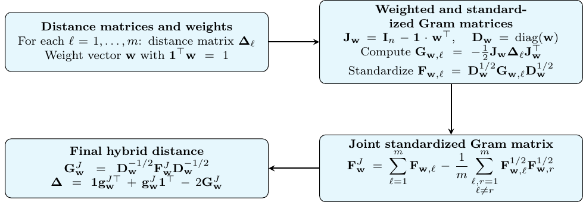
RelMS thus enables the integration of diverse data types into a unified
metric framework suitable for visualization and clustering, though a
higher computational cost. This is the reason why in (Grané, Salini, et
al. 2021) a simplified version of the above procedure was proposed,
called generalized Gower distance (G-Gower), by considering only the
first addend of
formula ((8)), which
mirrors Gower’s formula of simply summing over the distance matrices
(here in terms of the standardized Gram matrices). The construction of a
hybrid distance is implemented in function robust_distances() (see
Section 3.3 for details) which enables the methods relms or ggower,
for the simplified version.
As outlined in Section "Distances for mixed-type data", Gower’s distance is particularly useful for handling mixed-type data (quantitative, binary and multiclass categorical data). However, it also presents some notable limitations, most importantly, its inability to account for correlations among continuous variables and its lack of robustness, which makes it highly sensitive to outliers.
To overcome these limitations, in (Boj and Grané 2024), a new robust
distance was proposed for quantitative variables, which can be
incorporated into either G-Gower’s distance or the RelMS approach, and
is implemented in function robust_distances(). This new robust
approach increases the resistance of the metric to outliers and enhances
reliability when integrating mixed-type variables with
observation-specific weights.
Specifically, the quantitative component of the hybrid metric is computed as a robust Mahalanobis distance by means of a DB-trimming estimator, introduced in (Grané, Salini, et al. 2021) for outlier detection in complex datasets, and adapted for weighted data in (Boj and Grané 2024). It should be noted that robustness in the current framework is introduced through the continuous component of the mixed-data dissimilarities, using robust Mahalanobis-type distances. Binary and categorical variables are handled through classical similarity and dissimilarity measures.
In particular, let \(\Omega = \{1, \ldots n\}\) be the set of units for which the values of \(p\) variables are observed, \(\mathbf{z}_1, \dots, \mathbf{z}_n \in \mathbb{R}^p\), and form the rows of the data matrix \(\mathbf{Z}_{n \times p}\). Consider a distance measure \(\delta\) and for all pairs of units in \(\Omega\) compute the matrix of squared distances \(\mathbf{\Delta} = \left ( \delta^{2} \left(\mathbf{z}_i, \mathbf{z}_j \right) \right)_{1 \leq i,j \leq n}\). Then, given a new unit \(i_0\notin \Omega\), with observed values \(\mathbf{z}_0\in \mathbb{R}^p\), the proximity of \(i_0\) to the individuals in \(\Omega\) is defined as: \[\begin{equation} \label{eq:proximity_function} \phi(\mathbf{z}_0) = \sum_{i = 1}^{n} w_i \cdot \delta^2 (\mathbf{z}_0, \mathbf{z}_i) - \mathbf{V_\Delta}, \end{equation} \tag{9}\] where \(w_i\) denotes the weight associated with unit \(i\), and \(\mathbf{V_\Delta}\) is the geometric variability of the distance matrix \(\mathbf{\Delta}\), as defined in equation ((3)).
The proximity function ((9)) is used as a trimming estimator to exclude a fixed proportion \(\alpha\) of the most outlying observations according to distance \(\delta\). Although equation ((9)) is defined for a new observation \(\mathbf{z}_{0}\), in practice the proximity function is also evaluated for observations belonging to the reference sample. In this case, no leave-one-out procedure is performed; the computation uses the previously obtained distance matrix and the corresponding geometric variability measures. Therefore, when \(\mathbf{z}_{0}=\mathbf{z}_i\) for some \(i_0 \in \Omega\), the self-distance is equal to zero and is naturally included in the calculation.
With the trimmed sample, the covariance matrix for the quantitative variables is estimated and plugged into the Mahalanobis distance formula. The steps to compute the DB robust estimate of the covariance matrix for the quantitative variables are described in Figure 2, where \(\mathbf{Z}^{p_1}\) denotes the \(n \times p_1\) data matrix with the observations for the quantitative variables, and \(\alpha\) is the trimming parameter.
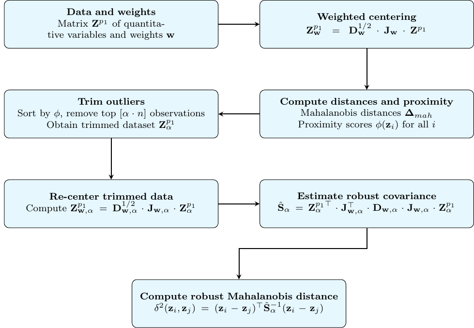
The latest version of
dbrobust includes the
wMCD estimator proposed in (Boj et al. 2026) as an alternative to the
DB-trimming estimator for robust covariance estimation. The wMCD
estimator extends the classical Minimum Covariance Determinant (MCD)
methodology to the weighted setting and provides a robust covariance
estimator that explicitly incorporates sampling weights. Its inclusion
is mainly motivated by computational considerations, as it was designed
to substantially reduce the computation time required to estimate the
covariance matrix, particularly in high-dimensional and large-scale data
sets. The robust covariance estimator used within robust_distances()
is specified through the cov_method argument, where "gv" (the
default option) corresponds to the DB-trimming estimator, whereas
"mcd" corresponds to the wMCD estimator.
Furthermore, when only continuous variables are present, robust G-Gower reduces to a robust Mahalanobis distance, providing a robust weighted distance measure in its own right. This constitutes a novel contribution of dbrobust, since no other R implementation currently provides robust Mahalanobis distances based on robust covariance estimators that explicitly accommodate sampling weights. Both DB-trimming and wMCD allow the computation of robust weighted Mahalanobis distances, with wMCD offering improved scalability for big data applications.
Although R is a powerful and flexible language for statistical computing, it presents notable limitations in DB multivariate analysis. In particular, when working with weighted mixed-type data, we identify several gaps: fragmented distance computation, lack of robust methods and Euclidean corrections, and underdeveloped visualization tools, each hindering effective multivariate analysis. These limitations highlight the need for a unified dbrobust package that consolidates and enhances existing tools.
One of the central functions in the
dbrobust package is
calculate_distances(), which provides a unified interface for
computing pairwise distance or similarity matrices from a data frame or
matrix. The function supports a wide range of data types, including
binary, categorical, continuous, and mixed-type data, and offers
compatibility with multiple well-known distance or similarity measures.
The primary objective of calculate_distances() is to simplify the
computation of distances in datasets of mixed-type by providing a
flexible and consistent function. Internally, it delegates computation
to specialized functions depending on the selected method, while
ensuring a standardized value structure. The internal and logical
modular structure of calculate_distances() can be found in Section 1
of the Appendix.
Supported methods include:
Binary data: Jaccard, Dice, Sokal-Michener, Russell-Rao, Sokal-Sneath, Kulczynski, and Hamming.
Categorical data: Matching coefficient, Cramér-based.
Continuous data: Euclidean, Standardized Euclidean, Manhattan, Minkowski, Canberra, Maximum, Cosine, Correlation, and Mahalanobis.
Mixed-type data: Gower.
Note that Gower is a generalized (aggregated) distance that combines
continuous, binary, and categorical variables into a single
dissimilarity measure. Although conceptually different from purely
numeric or purely binary distances, in calculate_distances() it is
included alongside the other methods to provide a unified interface for
the user.
A notable feature is the ability to convert distance matrices into
similarity matrices (when applicable), and to optionally square the
pairwise distances. The function is also designed with flexibility in
its output: users can request either a condensed dist object, a full
numeric distance matrix, or a similarity matrix. Moreover, users can
select the Minkowski power only if the minkowski method is chosen, via
the p argument.
The calculate_distances() function is a core component of the
dbrobust package,
providing essential support for subsequent operations. At the same time,
its general-purpose nature makes it valuable beyond the scope of the
package itself, allowing users to compute versatile distance or
similarity matrices that can serve as input for a wide range of external
analytical tasks.
The usage of the calculate_distances() function is:
calculate_distances(x, method = "gower", output_format = "dist",
squared = FALSE, q = NULL,
similarity_transform = "linear",
type = list(),weights = NULL)where:
A matrix or data.frame. Each row represents an observation.
A string specifying the distance/similarity method. Supported options are:
Binary: "jaccard", "dice", "sokal_michener",
"russell_rao", "sokal_sneath", "kulczynski", "hamming".
Categorical: "matching_coefficient", "cramer".
Continuous: "euclidean", "euclidean_standardized",
"manhattan", "minkowski", "canberra", "maximum",
"cosine", "correlation", "mahalanobis".
Mixed: "gower".
Output format: "dist" (distance object), "matrix" (numeric
matrix), or "similarity" (only for binary/categorical/mixed
methods). squared Logical; if TRUE, returns squared distances (not
applied to similarities).
Logical; if TRUE, returns squared distances (not applied to
similarities).
Numeric; the power parameter for the Minkowski distance (required if
method = "minkowski"); ignored otherwise.
Character string; ifoutput_format = "similarity", this specifies
the formula to convert distances to similarity scores. Supported:
"linear" (default), \(s_{ij} = 1-\delta_{ij}\), or "sqrt",
\(s_{ij} = 1-\delta_{ij}^{2}\).
Optional list specifying variable types for Gower distance (passed
directly to cluster::daisy). Arguments can be symm, asymm,
ordratio, or logratio.
Optional numeric vector containing weights. Its interpretation depends on the chosen method:
method = "gower"):A vector of length ncol(x) to weight the variables
(columns).
method = "cramer"):A vector of length nrow(x) to weight the observations
(rows), useful for handling class imbalance or stratified
sampling.
While calculate_distances() computes distances for various data types,
it does not guarantee that the resulting matrices fulfill the Euclidean
property. The next section presents make_euclidean(), a function
designed to verify and, if required, correct squared distance matrices
to ensure their Euclidean validity.
The make_euclidean() function is designed to verify and, if necessary,
transform a matrix of pairwise squared distances into a matrix of
pairwise squared distances that fulfills the Euclidean property. This
correction is important because some analytical methods, such as
classical or metric MDS, require the distance values to satisfy this
property. Numerical imprecision or certain data transformations may lead
to small violations of this condition, which make_euclidean() can
automatically detect and fix.
The function works by computing the weighted Gram matrix \(\mathbf{G}_{\mathbf{w}} = -\frac{1}{2} \mathbf{J}_{\mathbf{w}} \cdot \mathbf{\Delta} \cdot \mathbf{J_\mathbf{w}}^{\top},\) where \(\mathbf{\Delta}\) is the matrix of pairwise squared distances, \(\mathbf{w}\) is the user-supplied weight vector, and \(\mathbf{J_\mathbf{w}} = \mathbf{I_n} - \mathbf{1} \cdot \mathbf{w}^\top\) is the centering matrix defined by the normalized weights. It then checks the eigenvalues of \(\mathbf{G}_{\mathbf{w}}\). If the smallest eigenvalue \(\lambda_{\min}\) is smaller than a negative tolerance, the function adds a constant shift to all pairwise distances following the method of (Lingoes 1971) and (Mardia 1978), ensuring positive semi-definiteness of the Gram matrix.
The usage of the make_euclidean() function is:
make_euclidean(D, w = NULL, tol = 1e-10)where:
Square matrix of pairwise squared distances.
Numeric vector of weights, with length equal to the number of observations. Defaults to a vector of ones.
Numeric tolerance for detecting negative eigenvalues.
The function returns a list of values containing four main components.
The element D_euc contains the corrected squared distance values,
guaranteed to satisfy Euclidean properties after the procedure. The
elements eigvals_before and eigvals_after provide the eigenvalues of
the weighted Gram matrix \(\mathbf{G}_{\mathbf{w}}\) before and after
correction, respectively, allowing users to assess the magnitude and
necessity of the adjustment. Finally, the element transformed is a
logical value indicating whether any correction was applied, or if the
matrix argument D already fulfilled the Euclidean conditions presented
in Section "The Euclidean property". The internal and logical modular
structure of function make_euclidean() can be found in Section 2 of
the Appendix.
Using make_euclidean() offers several advantages. It ensures that
squared distance values are compatible with algorithms relying on
Euclidean geometry, thereby preventing failures or distortions in the
resulting embeddings. The correction is deliberately minimal (applied
only when violation is detected and using the smallest possible shift),
thus preserving the original distance structure as much as possible. It
is important to note that the function expects squared distances as
argument; if only raw distances are available, they should be squared
before calling the function. In this context, the disttoD2() function
from the dbstats
package can be used to conveniently convert a dist object into a
matrix of pairwise squared distances \(\mathbf{\Delta}\) before applying
make_euclidean().
The robust_distances() function is a core component of the
dbrobust package,
designed to compute robust squared (or simple) distance values between
individuals in a weighted dataset containing quantitative, binary, and
multiclass categorical variables. It supports two robust distance
measures, G-Gower and RelMs described in Section 2.3, and incorporates a
DB-trimming procedure for estimating robust covariance matrices in the
continuous subspace as was detailed in
Figure 2.
The usage of the robust_distances() function is:
robust_distances(data = NULL, cont_vars = NULL, bin_vars = NULL,
cat_vars = NULL, w = NULL, p = NULL,
method = c("ggower", "relms"),
cov_method = c("gv", "mcd"),
robust_cov = NULL,
alpha = 0.1, niter = 40,
nstart = 20, return_dist = FALSE)where:
Matrix or data frame containing the data.
Character vectors of variable names for continuous, binary and categorical respectively (if p is not provided).
Numeric vector of observation weights. If NULL, uniform weights
are used.
Integer vector of length 3 with the number of continuous, binary, and multiclass categorical variables (only if columns are sorted in this order).
Aggregation method: "ggower" for robust G-Gower distance values
and "relms" for robust RelMS distance values. Defaults to
"ggower".
Character string specifying the robust covariance method for
continuous variables: either "gv" (Geometric Variability) for the
DB-trimming or "mcd" (Minimum Covariance Determinant) for the wMCD
trimming algorithm. Default is "gv".
Optional precomputed robust covariance matrix for quantitative variables.
Trimming proportion for robust covariance estimation in quantitative
variables. Defaults to 0.1.
Integer specifying the number of concentration steps (C-steps) per
start. Only used if cov_method = "mcd". Defaults to 40.
Integer specifying the number of random initializations. Only used
if cov_method = "mcd". Defaults to 20.
Logical. If TRUE, returns the distance matrices \(\mathbf{D}\) as
dist objects; if FALSE, returns squared distance matrices
\(\mathbf{\Delta}\) as D2 objects. Defaults to FALSE.
The internal and logical modular structure of function
robust_distances() can be found in Section 3 of the Appendix.
This function is the most critical component of
dbrobust, as it
operationalizes the novel concepts introduced in (Boj and Grané 2024)
and (Boj et al. 2026), which underpin the methodological framework of
our current research line. By implementing these ideas within a robust
and flexible mixed-data framework, robust_distances() bridges recent
theoretical advances with practical computational tools, enabling their
direct application.
The merge_distances() function is a core component of the
dbrobust package,
designed to combine multiple distance matrices into a single consensus
distance matrix that fulfills the Euclidean property. The aggregation
can be performed either through a direct weighted combination of
distances based on a Pythagorean sum (Gower-like approach) or through
RelMS, which accounts for redundancy among sources (see
Figure 1). The procedure
accommodates both source-specific weights, controlling the contribution
of each distance matrix to the consensus solution, and sampling weights
associated with the observations. In all cases, input and output
distance matrices are enforced to fulfill the Euclidean requirement
through make_euclidean().
The usage of the merge_distances() function is:
merge_distances(distance_list, matrix_weights = NULL, w = NULL,
squared = FALSE, RelMS = TRUE, tol = 1e-10 ) where:
A list of distance matrices or dist objects. All distance matrices
must be square (\(n \times n\)) and correspond to distances that
fulfill the Euclidean property.
Numeric vector of weights associated with the distance matrices in
distance_list. Weights must be strictly positive and sum to one.
If NULL, all matrices receive equal weight.
Optional numeric vector of observation weights. Weights must be
strictly positive and are normalized to sum to one. If NULL,
uniform weights are assumed.
Logical value indicating whether the input matrices contain squared
distances. If FALSE (default), distances are squared internally
during the aggregation process. If TRUE, inputs are treated as
already squared.
Logical value indicating the aggregation method. If TRUE
(default), aggregation is performed using RelMS, which penalizes
redundancy among distance matrices. If FALSE, a direct weighted
combination based on a Pythagorean sum is computed.
Numeric tolerance used by make_euclidean() when enforcing the
Euclidean property through eigenvalue decomposition. Defaults to
1e-10.
In the latest version of
dbrobust, the
merge_distances() function has been added as a general framework for
distance aggregation. Besides enabling the application of RelMS to the
classical Gower approach for mixed data, it allows the combination of
any set of distance matrices, whether derived from different variable
blocks, different distance measures, or externally provided
dissimilarity data, providing a flexible and widely applicable distance
integration strategy.
The details of the modular structure can be found in Section 4 of the Appendix.
Visualizing relationships in distance matrices remains limited in R.
Tools such as qgraph() from the
qgraph package (Epskamp
et al. 2012) and ggpairs() from the
GGally package
(Schloerke et al. 2025) offer partial solutions, but lack integration
with MDS configurations, scale poorly with mixed-type data, and provide
limited customization for grouped or weighted analyses. In particular,
conditional visualizations, faceted MDS plots, and DB heatmaps or
network representations are not natively supported in a cohesive and
user-friendly manner.
The functions cmdscale() and wcmdscale(), which perform classical
and weighted MDS respectively, do not internally verify whether the
distance matrix passed as an argument fulfills the Euclidean
requirement. In particular, they do not check the positive
semi-definiteness of the associated Gram matrix constructed via double
centering of the squared distances. If the Gram matrix is not positive
semi-definite, the distance matrix does not fulfill the Euclidean
property, and the MDS embedding may produce invalid or complex
(imaginary) coordinates.
The visualize_distances() function in the
dbrobust package
provides a versatile interface to explore and display distances or
similarities through various visualization techniques. It supports
multiple plotting methods including classical and weighted MDS,
heatmaps, and network graphs.
This function accepts distance matrices in either dist objects or
symmetric square matrices D2, performing argument validation to ensure
correctness. It offers flexibility in the number of dimensions for MDS
(parameter k), optional weighting schemes, and grouping variables to
color or annotate observations. Supported visualization methods include:
Classic MDS: Classic MDS from R base function cmdscale,
Weighted MDS: Weighted MDS variant implemented using the wcmdscale()
function from the
vegan package,
Heatmap: Displays pairwise distances as a colored matrix with optional grouping and clustering, and
Network graph: Visualizes relationships as a network using the qgraph package.
The usage of the visualize_distances() function is:
visualize_distances(dist_mat, method = c("mds_classic", "mds_weighted",
"heatmap", "qgraph"), k = 3, weights = NULL,
group = NULL, group_colors = NULL,
main_title = NULL, tol = 1e-10, ...)where:
Square distance matrix (numeric) or a dist object containing
pairwise distances between individuals.
Character string specifying the visualization method:
"mds_classic", "mds_weighted", "heatmap", or "qgraph".
Defaults to "mds_classic".
Integer. Number of dimensions for MDS (default 3). Must satisfy
\(1 \le k \le \min(4, n_{\text{obs}}-1)\).
Optional numeric vector of weights for weighted MDS. The dimension must match the number of observations. Defaults to a vector of ones.
Optional factor or vector indicating group membership for coloring or annotating observations.
Optional character vector of custom colors for the groups. If
NULL, a predefined custom palette is used.
Optional character string specifying the main plot title.
Numeric tolerance for checking approximate symmetry and Euclidean
property. Defaults to 1e-10.
Additional arguments passed to internal plotting functions
(plot_mds, plot_heatmap, or plot_qgraph), such as clustering
method, palette, max nodes, edge thresholds, etc.
The modular design makes visualize_distances() maintainable,
extensible, and easy to understand. By delegating specific tasks to
helper functions, each visualization method is implemented
independently, which simplifies future extensions and maintenance. The
details of the modular structure can be found in Section 5 of the
Appendix.
The function visualize_distances does not automatically enforce
Euclidean geometry. However, users who need a Euclidean embedding can
preprocess their distance matrix using the function make_euclidean,
which inspects the Gram matrix and optionally applies an eigenvalue
correction (as detailed in Section 2.3). This ensures that the resulting
MDS embedding is valid and interpretable in a Euclidean space.
Beyond its compatibility with the
dbstats package, the
dissimilarities computed by
dbrobust, which can
be represented as dist objects, can be directly employed by a broad
range of DB procedures available in R. These include hierarchical and
partitioning clustering methods such as hclust() from
stats and agnes(),
diana(), pam(), fanny(), and clara() from
cluster. They can also
be used in ordination techniques, including classical multidimensional
scaling via cmdscale() from
stats, non-metric
multidimensional scaling via isoMDS() from
MASS and metaMDS() from
vegan, and principal
coordinates analysis via pcoa() from
ape (Paradis and Schliep
2019). Furthermore, the resulting dissimilarities can serve as input for
inferential procedures such as PERMANOVA through adonis2(), ANOSIM
through anosim(), Mantel tests through mantel(), and DB redundancy
analysis through capscale(), all available in
vegan. Additional
examples are summarized in Table 3, which highlights the breadth of DB
methods that can directly operate on dissimilarities generated by
dbrobust.
Consequently,
dbrobust may be
viewed not only as a tool for robust distance computation but also as a
general-purpose provider of dissimilarity measures that can be readily
integrated into a wide variety of statistical learning, exploratory data
analysis, and DB modelling workflows within the R ecosystem.
| Method category | Package | Functions |
|---|---|---|
| Hierarchical clustering | stats, cluster | hclust(), agnes(), diana() |
| Partitioning clustering | cluster | pam(), fanny(), clara() |
| Ordination | stats, MASS, vegan, ape | cmdscale(), isoMDS(), metaMDS(), pcoa() |
| DB inference | vegan | adonis2(), anosim(), mantel(), capscale() |
| DB modelling | dbstats | dblm(), dbglm(), dbplsr(), ldblm(), ldbglm() |
In this section, we analyze two mixed-type datasets to illustrate
different functionalities of the
dbrobust package. The
simulated dataset is used to highlight the behavior of the proposed
methodologies under controlled contamination settings, whereas the
real-data application serves as a practical vignette illustrating the
package workflow and its main functions. In both cases, we start by
computing three different metrics: classical Gower, robust G-Gower and
robust RelMS, by means of functions calculate_distances() using
method = "gower" (the default option) and robust_distances() with
method = "ggower" or method = "relms". For the robust metrics, the
sample covariance matrix required in the Mahalanobis distance is
estimated using DB-trimming (cov_method = "gv", the default option)
with a trimming parameter of alpha = 0.1 (the default value). The next
step is to assess the Euclideanarity condition, and for that purpose
function make_euclidean() is applied to the three distance matrices.
Finally, we proceed by comparing their Euclidean configurations with
multiple MDS plots, as well as a direct comparison by means of network
representations. For that purpose, the visualize_distances() function
is used as a powerful tool for uncovering patterns and anomalous data
through the visual inspection of dissimilarities between units.
The package dbrobust contains four sets of simulated data called
Data_HC_no_contamination, Data_HC_contamination,
Data_MC_no_contamination and Data_MC_contamination. All of them were
generated from multivariate normal distributions with \(p = 9\)
components, and different patterns of underlying correlation
(high/moderate). The first four components were retained in the
continuous form, while the remaining dimensions were later discretized
into binary or multiclass categorical variables using percentile-based
thresholds. Finally, a 5%-outlying contamination was added to some of
the continuous components (see (Boj and Grané 2024) for the details).
In addition to the original variables, each dataset incorporates a weighting variable containing the weights for each observation, specifically constructed to illustrate the methodology with weights. To create the weighting variable, a proportional frequency-based approach derived from the joint distribution of the first multiclass and the first binary variables was adopted.
In this section, we focus on the dataset Data_MC_contamination to
illustrate some of the functionalities of the dbrobust package. In
particular, this dataset is composed of 525 observations and 9 variables
of mixed type (4 continuous, 3 multiclass categorical, and 2 binary),
with an underlying moderate correlation structure (\(\rho = 0.6\)) as well
as the weights. The last 25 rows correspond to contaminated observations
created by adding perturbations equal to three times the standard
deviation of each quantitative variable to a subset of the 500 original
units.
We present a comparative study of three distance metrics: the classical Gower and two robust alternatives, G-Gower and RelMS. The goal of this comparison is to evaluate the effectiveness of robust methods under realistic conditions involving data contamination.
The analysis begins with a qualitative exploration using classical MDS
configurations to visualize how each metric captures the underlying data
structure (see Figure 3, where option "mds_classic" was used to
produce the conditional multiple MDS plot and outlying units were
identified with the "group" option). The classical Gower metric
(panel 3a) exhibits a pronounced artifact caused by
binary and categorical variables, which severely degrades the
visualization. This discretization leads to an artificial stratification
of the data into three distinct bands, obscuring the underlying
continuous relationships among observations. In contrast, both robust
metrics, G-Gower (panel 3b) and RelMS
(panel 3c), successfully separate the outlying
observations from the main data cloud, placing them clearly apart from
the bulk of the data. This effect results from the robust Mahalanobis
distance used for continuous predictors in G-Gower and the combined
treatment of variable types in RelMS, which integrates robust
Mahalanobis, Jaccard and Hamming distances for continuous, binary, and
multiclass predictors, respectively.
Panels 3b–3c show the true outliers (known from the data generation process) for comparison. The visual agreement between outliers detected in the trimming step (panels 3d–3e) and true outliers confirms the good sensitivity of the robust methods. Overall, the robust configurations reveal not only a better isolation of anomalous units but also a clearer depiction of the underlying clustered structure among regular observations, an effect that is masked under the classical Gower metric.
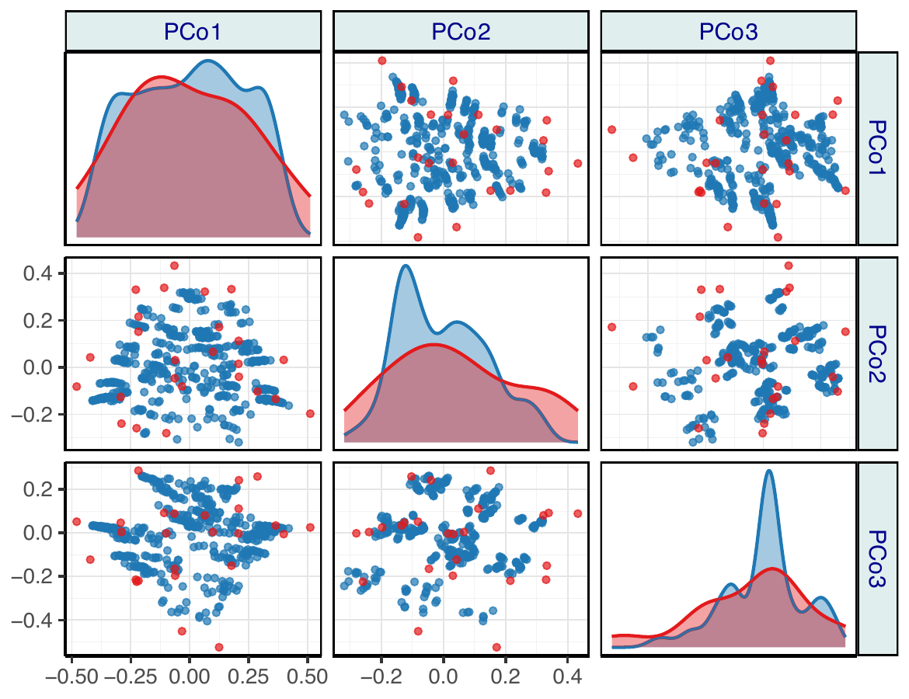
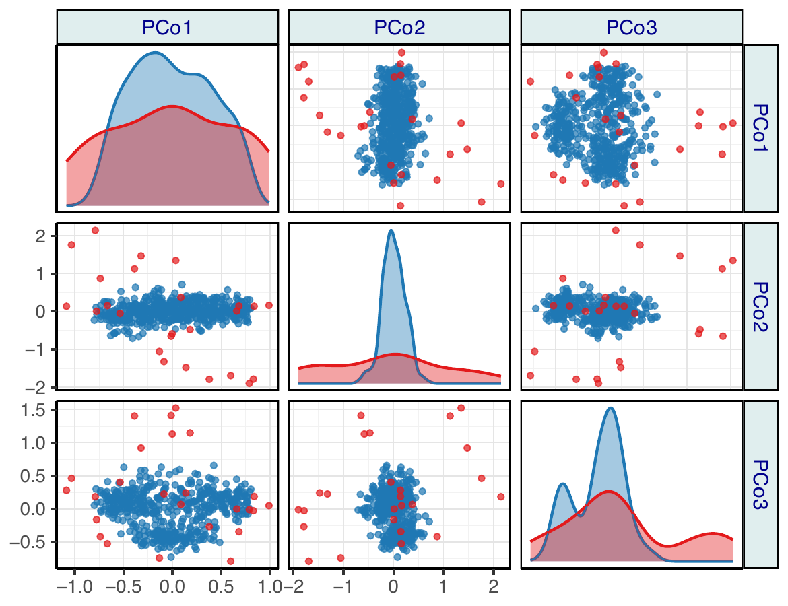
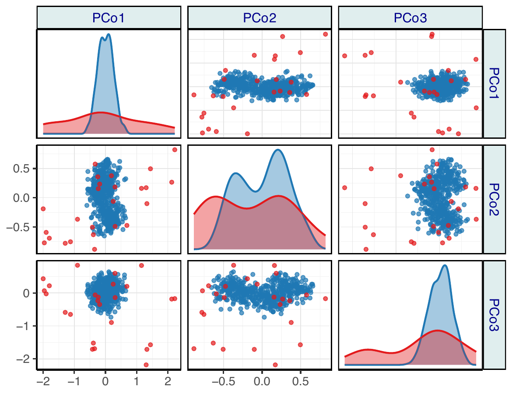
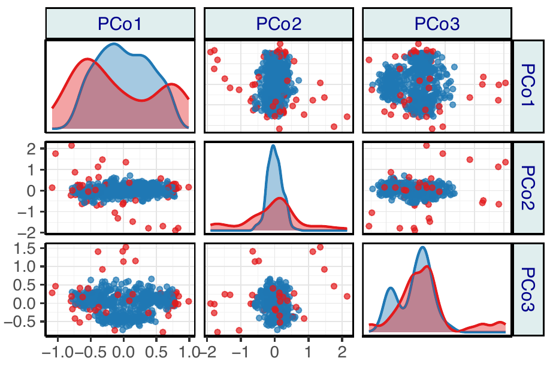
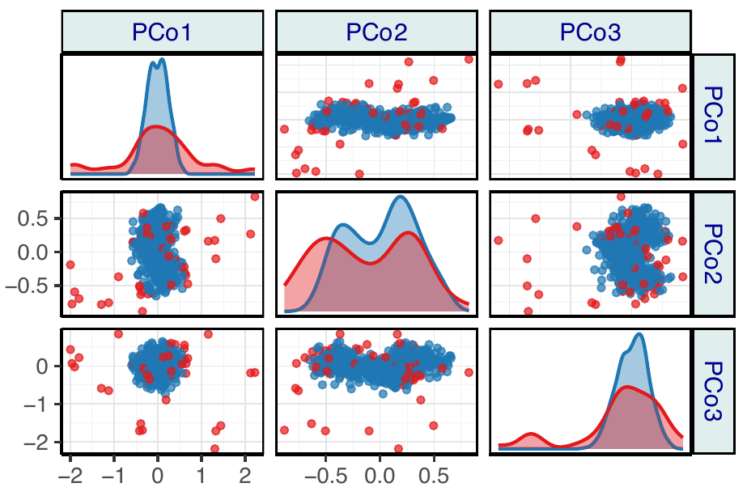
Data_MC_contamination dataset. Panels (a)–(c) display the
configurations obtained using the Gower, G-Gower, and RelMS distances,
respectively, where red points correspond to the true outliers
introduced in the data generation process. In panels (d)–(e) highlighted
points indicate the trimmed units to estimate the covariance matrix in
Mahalanobis distance.
The analysis is followed by an examination of similarity networks to
provide a more detailed view of the relationships among observations.
Figure 4 displays the similarity networks (produced
with "qgraph" option of function visualize_distances()), where each
node represents an observation, and spatial proximity between nodes
reflects pairwise similarity (obtained as \(1-\delta\), where \(\delta\) is
the distance measure): nodes positioned closer together correspond to
more similar observations, while those farther apart are more
dissimilar. For visualization purposes, the graphs show randomly
selected stratified subsamples of \(100\) observations, preserving the
target outlier proportions. Outlying units are colored red.
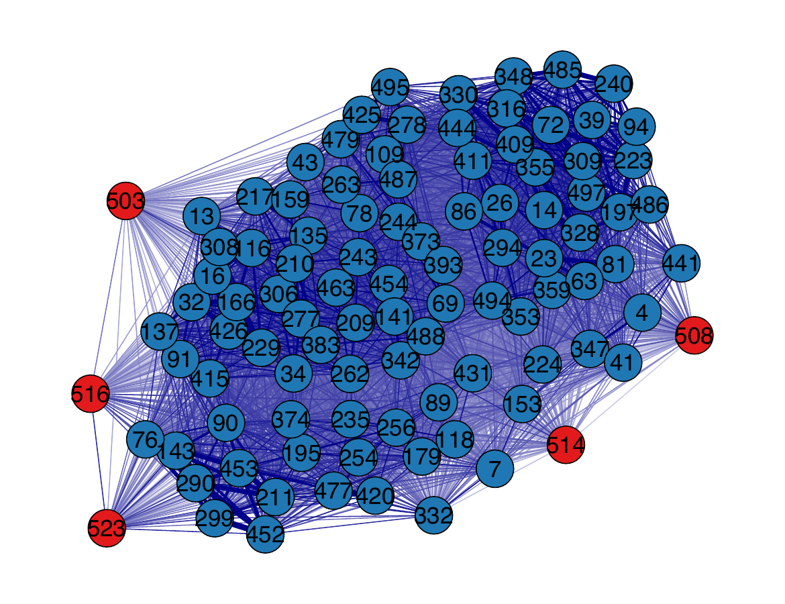
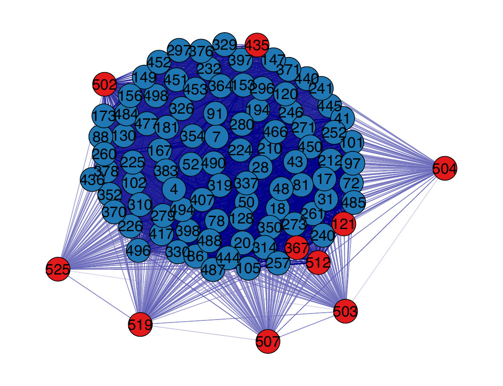
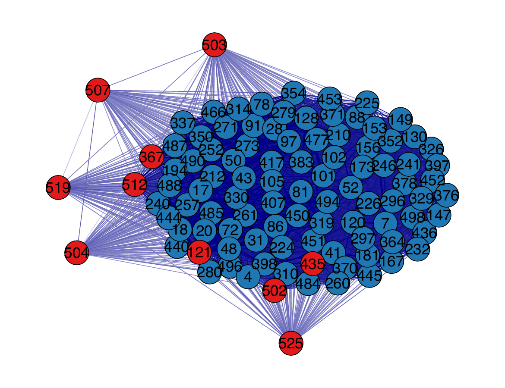
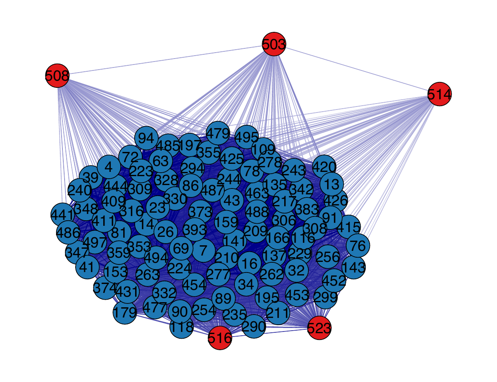
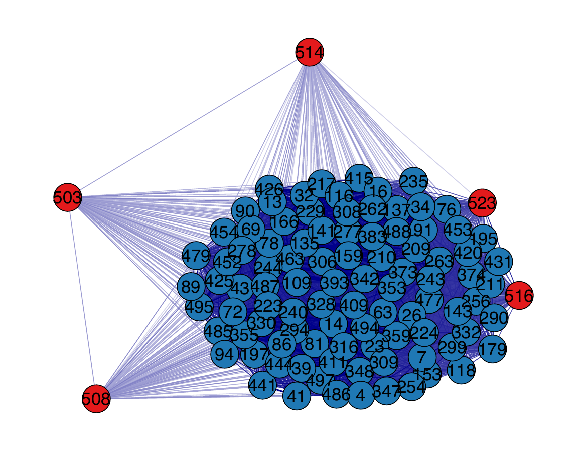
Data_MC_contamination dataset. Panels (a)–(c) display the
connectivity structure of the observations under the Gower, G-Gower, and
RelMS distance measures, respectively. In panel (a), red nodes
correspond to the true outliers introduced during data generation,
whereas in panels (b) and (c), red nodes indicate the outliers detected
by the trimming procedure. Panels (d)–(e) show the true outliers for
G-Gower and RelMS, respectively, to facilitate comparison between
detected and actual anomalous units.
A clear visual pattern emerges: many red nodes are either clustered together or separated from the main cloud of blue nodes (non-outliers). Even when red nodes are not distinctly isolated, they tend to appear on the periphery of the blue cloud and are often connected to other red nodes. Furthermore, since the true outliers were placed as the last observations (indices \(>500\)), visual inspection reveals that many of the trimmed nodes correspond to this upper-index region, confirming that the trimming procedure effectively captures a substantial proportion of the true outliers.
It is worth emphasizing, however, that the trimming step implemented in the robust distances is not primarily intended as an outlier detection procedure. Its goal is to robustify the distance estimation by reducing the influence of observations that lie far from the bulk of the data, rather than to explicitly identify or label them as anomalous. The fact that many trimmed units coincide with the true outliers illustrates the effectiveness of this robustification process: by downweighting or excluding extreme observations, the robust distances recover a more faithful representation of the underlying data geometry.
Overall, the visual evidence provided by the MDS configurations and
similarity networks generated using the visualize_distances() function
from the dbrobust package suggests that the robust metrics are
effective in isolating anomalous observations while preserving the
structure of the regular data, thereby achieving a more reliable
foundation for subsequent modeling or clustering tasks.
To illustrate the performance of the robust distance measures in a
real-world setting, we analyze a dataset derived from the World
Development Indicators (World Bank), available at
https://www.kaggle.com/datasets/hn4ever/world-development-indicators-bycountries.
The dataset comprises a set of socioeconomic indicators that capture
diverse dimensions of national development with a sample size of 97
countries worldwide. Specifically, we use the observations corresponding
to the year 2021, which is the latest year consistently available for
the selected indicators. The numerical variables include the homicide
rate (Hom, number of homicides per 100,000 inhabitants), the
proportion of the population living on less than $3.20 per day adjusted
for purchasing power parity (B320), life expectancy at birth (LEx),
infant mortality rate (IMo, number of children dying before age one
per 1,000 live births), the percentage of the population suffering from
insufficient nutrition (INu), government expenditure on education as a
percentage of GDP (GEE), and the proportion of arable land suitable
for cultivation (ArL). Three binary variables describe key aspects of
infrastructure and public services: the adequacy of the health system
(HSy, with categories 1 = Adequate, 2 = Inadequate), access to
electricity (Ele, with categories 1 = High, 2 = Low) and the poverty
indicator (Pov, with two categories: 1 = High and 2 = Low) that
classifies countries according to their general poverty status. In
addition, two categorical variables provide contextual information: the
continent of each country (Con, with five categories: Africa,
Americas, Asia, Europe, and Oceania) and the pollution level (Pol,
with three categories: 1 = High, 2 = Medium, 3 = Low).
It is important to note that the variables Con (Continent) and Pov
(Poverty) were not included in the distance computation, as they were
used exclusively for conditioning and interpretative purposes in the
subsequent analyses.
Additionally, to account for the relative importance of each observation, a weighting variable was incorporated into the dataset based on national population size. Specifically, total population data for the most recent available year (2022) were retrieved from the DataHub repository (sourced from the World Bank). The resulting population figures were merged with the main dataset by country name, and normalized to create observation-specific weights. These weights reflect the demographic scale of each country and are employed in subsequent analyses to ensure that larger populations exert proportionally greater influence while preserving comparability among units.
To analyze this mixed-type dataset, we proceed as in the previous
application. We start by computing the three distances, namely Gower,
robust G-Gower and robust RelMS, and before their comparison, we include
a heatmap representation for robust G-Gower metric (produced with
"heatmap" option) for illustrative purposes (see
Figure 5).
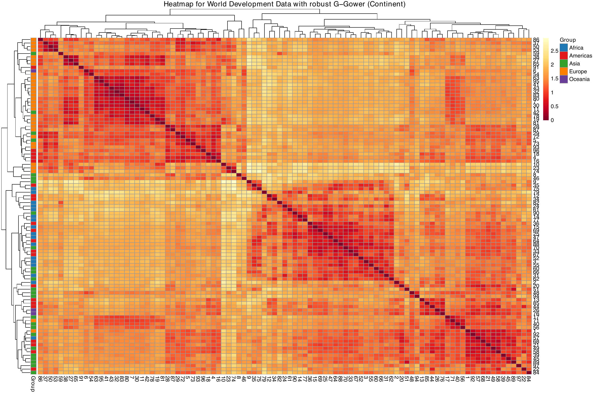
To illustrate the performance of the three distances, we present a comparative study whose main goal is to assess the behavior of the classical and robust approaches under realistic socioeconomic data conditions, where heterogeneity across countries and potential data irregularities (e.g., extreme values or nonlinear dependencies) may distort the analysis.
To further illustrate these aspects,
Figure 6 presents the multiple MDS plots with the
classical MDS configurations obtained from the three distance matrices,
with variable Pov (Poverty) as the conditioning factor.
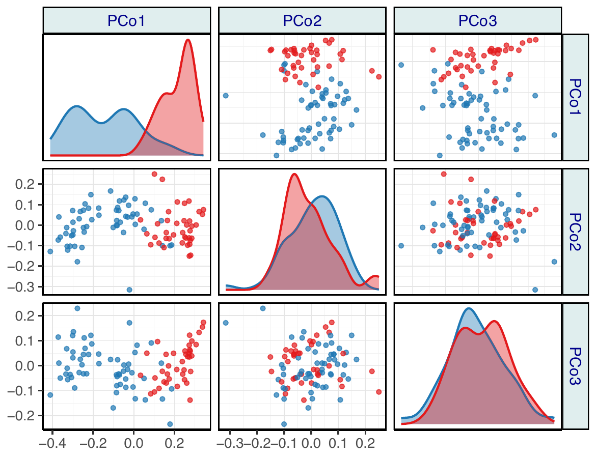
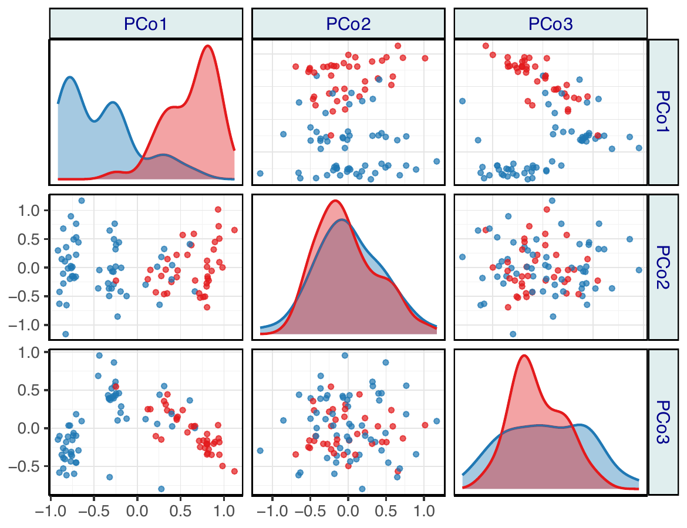
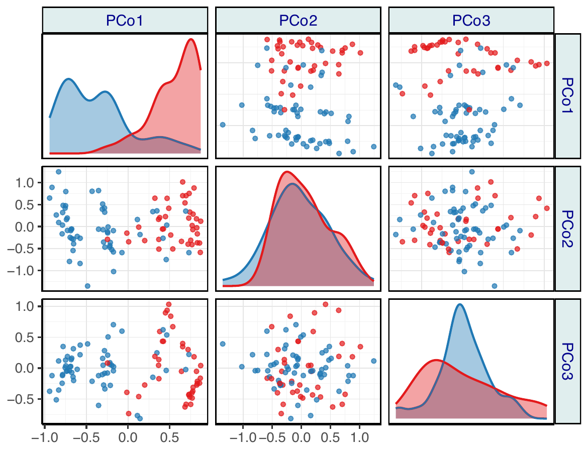
Pov; Blue = High poverty level, Red = Low
poverty level).
The MDS configurations in
Figure 6 display the spatial arrangement of
countries according to their socioeconomic similarity, grouped by
poverty level (Pov). Under the classical Gower distance (a), two
well-defined clusters emerge, corresponding to the high- and low-poverty
groups, with only a few countries lying in intermediate positions. The
same general structure is preserved under the robust G-Gower and RelMS
distances (b)–(c), indicating that the dataset exhibits
low-contamination conditions.
To gain further insight into the global development patterns,
Figure 7 displays the multiple MDS plots
with the classical MDS configurations obtained from the three distance
matrices, using the variable Con (Continent) as the conditioning
factor. Coloring the countries by continent allows us to assess whether
geographic or regional factors are reflected in the latent similarity
structure captured by each distance measure.
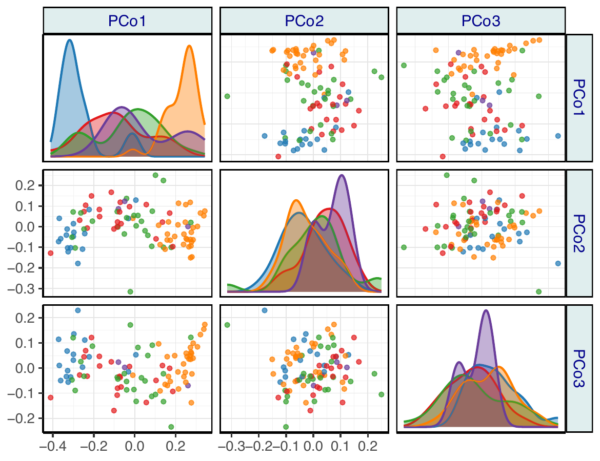
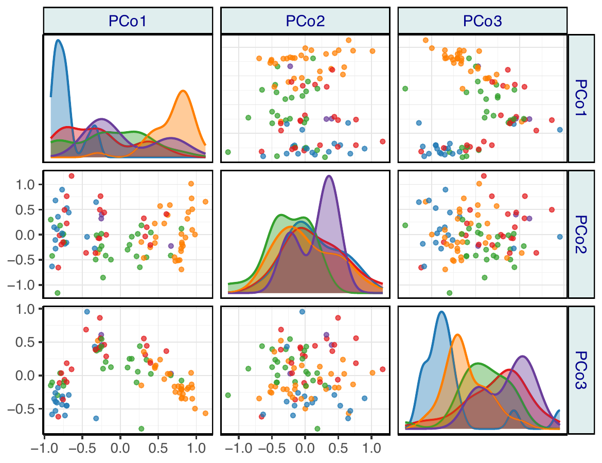
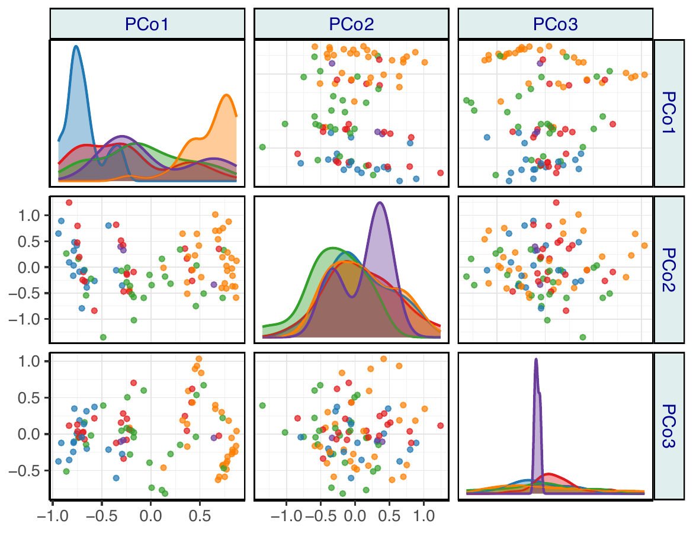
Con; Blue = Africa, Red = America, Green = Asia,
Orange = Europe, Purple = Oceania).
The MDS configurations in Figure 7 reveal a clear regional structure in the World Development Indicators dataset. Under the classical Gower distance (a), European and American countries form compact clusters, whereas African and Asian nations appear more dispersed, suggesting greater internal heterogeneity in their socioeconomic indicators. When the robust G-Gower and RelMS distances are applied (b)-(c), the global configuration becomes smoother and less dominated by extreme countries. The robust methods attenuate the influence of highly unbalanced indicators such as homicide rate or access to electricity, allowing a more balanced representation of intercontinental relationships. For example, countries from Asia and the Americas overlap more consistently, reflecting intermediate development profiles, while African countries remain more distinct but less isolated than in the classical solution.
To complement the MDS representations,
Figure 8 displays the network structures
derived from the three distance matrices using the "qgraph"
visualization method, with countries grouped by their poverty level
(Pov). In these networks, edges represent the strongest inter-country
similarities, while node proximity and color reflect the degree of
connectedness within and across poverty groups.
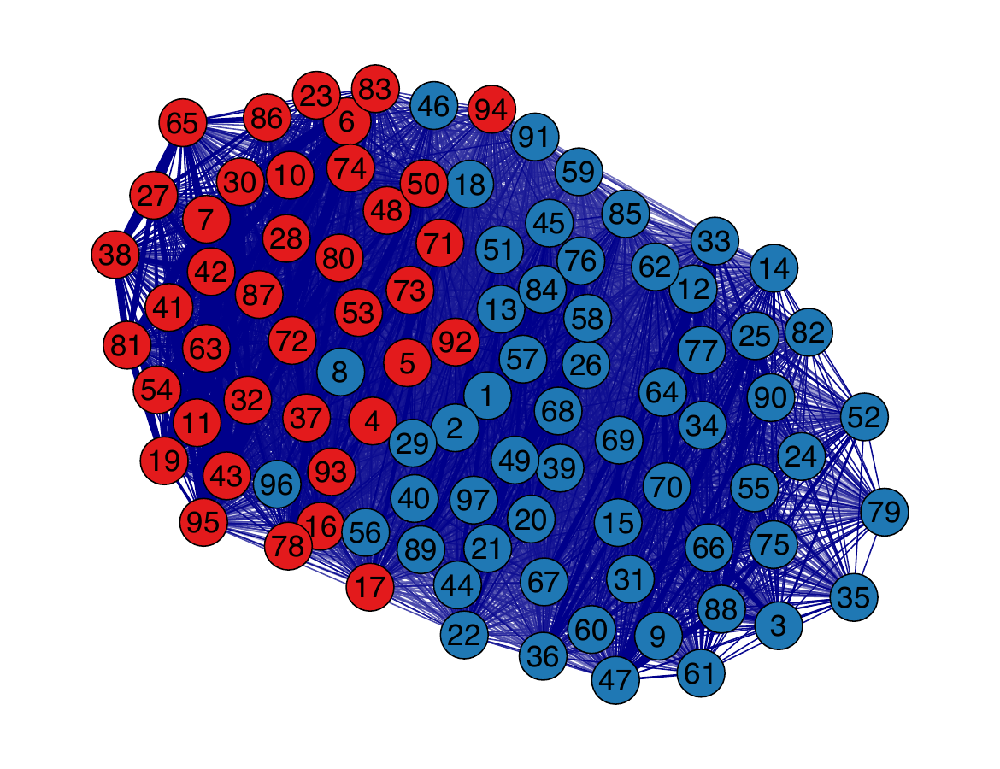
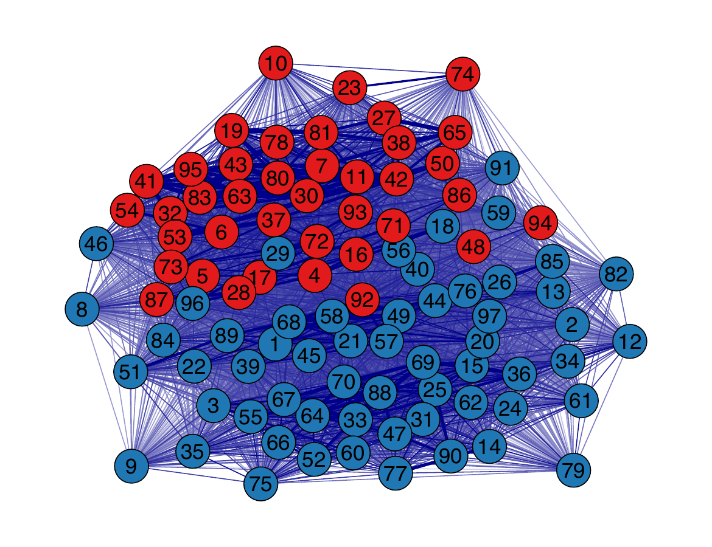
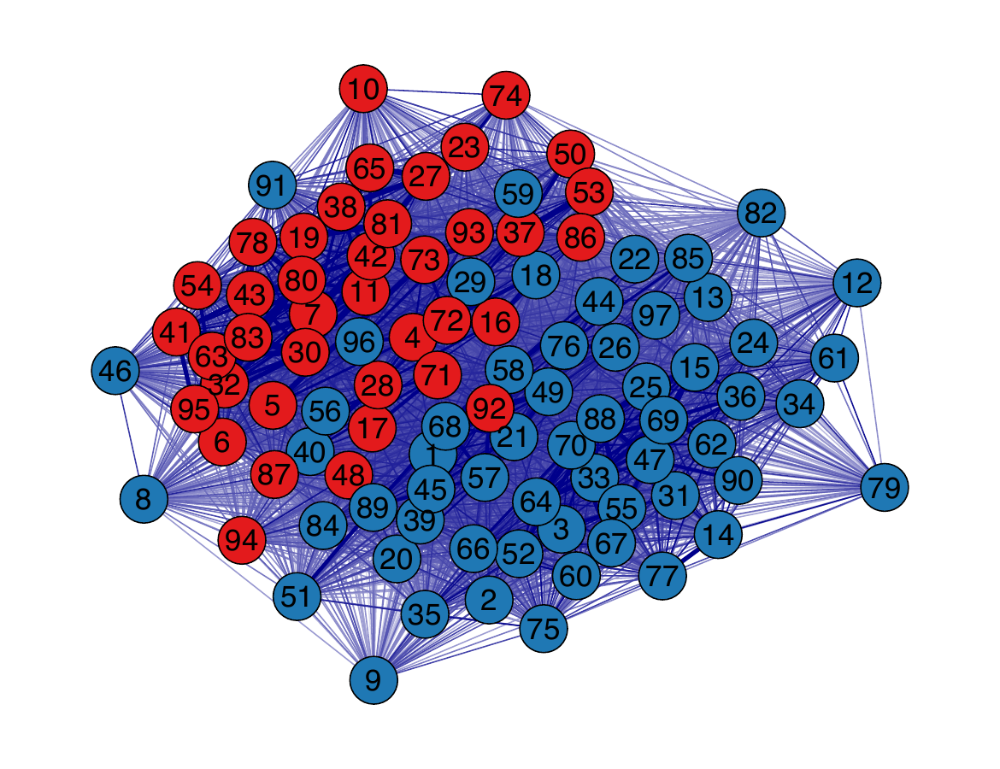
qgraph) of
the World Development Indicators dataset under three distance measures,
with nodes colored by poverty level (Pov; Blue = High
poverty level, Red = Low poverty level).
In the network representations of Figure 8, countries are grouped by poverty level. The classical Gower graph (a) displays two well-established clusters with a few overlapped observations, the same for G-Gower (b) and RelMS (c) demonstrating that the data present low-contamination conditions. When contamination is absent, robust methods perform comparably to classical ones.
Similarly, Figure 9 presents the "qgraph"
representations for the same three distance measures, this time grouping
countries by continent (Con). These network structures highlight
regional cohesion and cross-continental linkages based on socioeconomic
similarity.
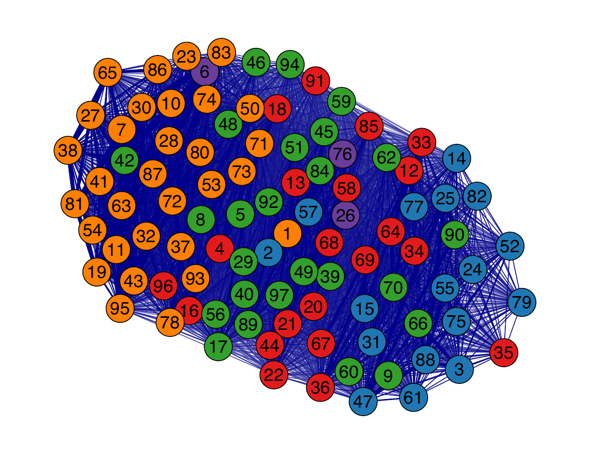
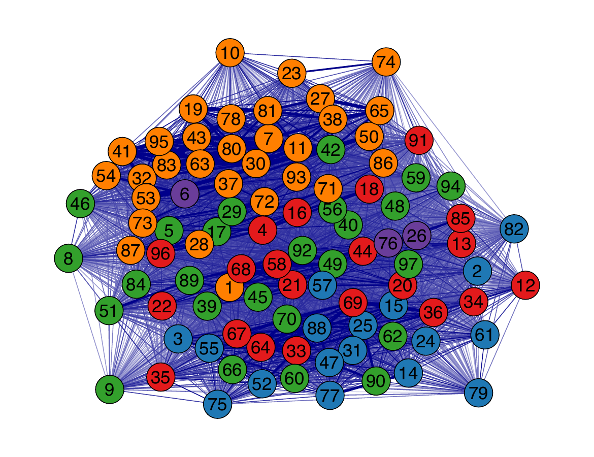
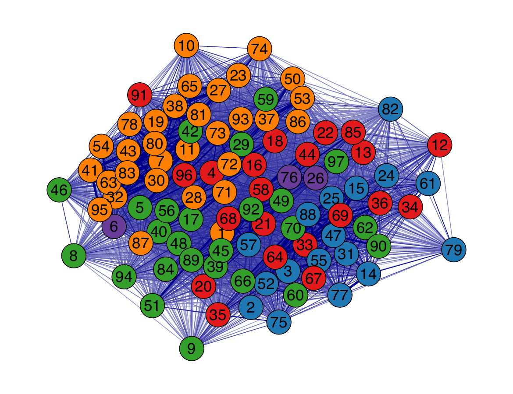
qgraph) of
the World Development Indicators dataset under three distance measures,
with nodes colored by continent (Con; Blue = Africa, Red =
America, Green = Asia, Orange = Europe, Purple = Oceania).
The network visualizations in Figure 9 show that the three distance measures produce very similar connectivity patterns. In all cases Europe appears as a relatively compact and well-defined cluster, indicating homogeneous socioeconomic profiles among European countries in the dataset. The other continents (Africa, Asia and the Americas) display greater internal variability and, in some areas, partially overlapping connections; this overlapping is present across the Gower, G-Gower and RelMS graphs and is not visibly reduced by the robust alternatives. In short, the robust distances do not produce a markedly different network topology here, a finding consistent with a dataset that lacks strong influential outliers: when contamination is absent or weak, robustification yields configurations comparable to the classical measure rather than “improvements” in network structure.
Overall, the empirical results obtained in this application indicate
that the robust distance measures, G-Gower and RelMS, do not outperform
the classical Gower distance in either the MDS or network
representations. This outcome is conceptually consistent with the
theoretical rationale of robust methods: their purpose is not to enhance
performance under regular data conditions, but to ensure stability and
resilience in the presence of contamination, extreme observations, or
structural imbalance. In this dataset, characterized by moderate
variability and limited influence of atypical cases, the classical and
robust approaches converge toward similar configurations. Rather than
aiming to highlight the superiority of robust measures, this application
was intended to demonstrate the practical implementation and versatility
of the dbrobust package, illustrating how it can be applied to
complex, real-world socioeconomic data.
This work introduces dbrobust, a comprehensive R package designed to address the methodological and practical challenges of robust DB analysis in datasets of mixed-type. Through a unified framework, the package enables the computation and visualization of classical and robust distances across mixed variable types, offering tools that are both accessible and extensible for applied researchers.
The proposed methodology demonstrates advantages in handling data contamination, preserving structural patterns, and enhancing interpretability. By integrating novel robust formulations and advanced visualization techniques, dbrobust facilitates exploratory and confirmatory analyses that are resilient to outliers and adaptable to diverse research contexts. In the current framework, robustness is primarily introduced through the continuous component of the mixed-data dissimilarities, whereas binary and categorical variables are handled through classical similarity and dissimilarity measures. Importantly, the package bridges the gap between theoretical innovation and practical implementation, supporting seamless interoperability with existing R tools and workflows. Its utility is particularly relevant in fields such as social sciences, quality of life research, and gender inequality studies, where weighted complex data structures and robustness requirements are common.
The development of dbrobust represents a significant contribution to the statistical ecosystem, empowering analysts to extract meaningful insights from complex, real-world datasets through robust and interpretable DB methods. Future research may extend the current framework by incorporating robust alternatives for binary and categorical variables, further broadening the scope of robust mixed-data analysis. Its seamless compatibility with the dbstats package for DB regression modeling, as well as with other widely used R packages that rely on distance inputs, such as those for clustering and classification, ensures its integration into existing analytical workflows and reinforces its practical value for applied research.
Marcos Álvarez: Software, Writing – Original draft preparation, Investigation. Eva Boj: Conceptualization, Methodology, Software, Writing – Original draft preparation, Reviewing and Editing, Investigation, Supervision. Aurea Grané: Conceptualization, Methodology, Software, Writing – Original draft preparation, Reviewing and Editing, Investigation, Supervision.
The authors gratefully acknowledge the support of grants PID2021-123592OB-I00 and TED2021-129316B-I00 funded by MCIN/AEI/10.13039/501100011033 and by “ERDF A way of making Europe” and “European Union NextGenerationEU/PRTR”.
The calculate_distances function is designed following a modular
architecture, which delegates specific tasks to helper functions
depending on the data type and distance method.
Table 4 summarizes each internal component
and its role.
| Function | Description |
|---|---|
calculate_distances |
Main entry point and wrapper function. Validates arguments, selects method category, delegates computation to specialized helper functions, and formats values. |
distBinary |
Computes pairwise distances for binary data using standard measures such as Jaccard, Dice, and Sokal-Michener. Uses ade4 where appropriate. |
distCategorical |
Computes distances for categorical variables using the matching coefficient (proportion of attribute matches) or the Cramér-based distance which accounts for the pair-wise association between variables. |
distContinuous |
Handles numerical data using measures such as Euclidean, Minkowski, Mahalanobis, Cosine, and Correlation. Uses base R and proxy where appropriate. |
distMixed |
Implements Gower’s distance for mixed-type data. Continuous variables are scaled by range; binary variables can be treated as symmetric or asymmetric (controlled by binaryAsym; only 1/1 counts as a match); categorical variables are compared by exact match. Users can optionally specify which columns are continuous, binary, or categorical using the arguments continuousCols, binaryCols, and categoricalCols. Similarities are converted to distances (\(d = 1 - s\)), yielding a symmetric matrix in \[0,1\]. |
formatOutput |
Converts distance matrix into the desired value format: dist, full matrix, or similarity matrix using selected transformation. |
convertToDist |
Utility function to coerce similarity matrices into dist objects. Supports linear and square-root transformations. |
Modularizing the calculate_distances() function is crucial for
maintaining clarity, flexibility, and ease of maintenance. By breaking
down the computation into specialized helper functions based on data
type and distance measure, the function becomes more organized and
easier to extend or debug. This approach also promotes code reuse and
separation of concerns, allowing each component to focus on a specific
task. Furthermore, leveraging established external libraries such as
proxy or
ade4 whenever possible
ensures efficient implementations of complex distance calculations,
reduces development time, and benefits from community-tested and
optimized algorithms, ultimately enhancing the reliability and
performance of the values returned by the function.
The function calculate_distances() might be intricate and modular, yet
its logic can be broken down into a series of conceptual steps, which
are outlined in Table 5.
| Step | Description |
|---|---|
| Argument validation | Check x type, outputFormat, and p for Minkowski. |
| Normalize method | Standardize method string (lowercase, underscores). |
| Select distance function | Choose appropriate function based on method category (binary, categorical, continuous, mixed). This acts as a wrapper for the specialized routines. |
| Compute distances | Call distBinary, distCategorical, distContinuous, or distMixed. |
| Optional transformations | Square distances if requested; convert to similarity using linear or sqrt transformation. |
| Return values | Return values as dist object, numeric matrix, or similarity matrix. |
While make_euclidean() is implemented as a single function, its logic
can be decomposed into conceptual steps, summarized in
Table 6.
| Step | Description |
|---|---|
| Argument validation | Ensure the matrix argument D is a square matrix, and the weight vector w has matching length. |
| Weight normalization | Normalize w to sum to 1. |
| Compute weighted Gram matrix | Apply centering matrix \(\mathbf{J}_w\) to \(\mathbf{D}\) to obtain \(\mathbf{G}_w\). |
| Eigenvalue analysis | Extract eigenvalues of \(\mathbf{G}_w\) and check smallest value against tol. |
| Correction step | If \(\lambda_{\min} < -\)tol, shift \(\mathbf{D}\) by \(2\,|\lambda_{\min}|\) off-diagonal. |
| Recompute eigenvalues | Compute eigenvalues of corrected \(\mathbf{G}_w\) to verify positive semi-definiteness. |
| Return values | Return a list containing the corrected \(\mathbf{\Delta}\) matrix, eigenvalues before/after, and transformation flag. |
| Step | Description |
|---|---|
| Argument validation | Ensures that either p or all variable groups are provided, checks for missing variables, and forbids NA values in the selected columns. |
| Data preparation | Reorders variables, converts factors/characters to numeric codes, and assembles the data matrix in \[cont, bin, cat\] order. |
| Weight handling | Sets equal weights if w is NULL; otherwise, normalizes and validates the user-supplied weights argument. |
| Robust covariance estimation | If continuous variables are present and no covariance matrix is supplied by the user via the argument robust_cov, a robust covariance estimator is computed according to the argument cov_method. The option "gv" calls robust_covariance_gv, which estimates the covariance matrix using the geometric variability trimming approach controlled by the trimming proportion alpha. Alternatively, "mcd" calls robust_covariance_mcd, which computes a weighted Minimum Covariance Determinant (wMCD) estimator using an iterative C-step algorithm with multiple random initializations. Both estimators return the robust covariance matrix together with the corresponding diagnostic information (central observations, detected outliers, and trimming statistics). |
| Squared distance computation | Depending on method, calls either robust_ggower or robust_RelMS to combine distances from each variable type. |
| Attach diagnostics | If trimming was performed, attaches indices of central and outlier units, the \(\phi\) proximity values, and trimming quantile q as attributes of the result. |
| Return values formatting | Returns either squared distances D2 or converts to a dist object with D2toDist if return_dist = TRUE. |
The robust_distances() function is designed following a modular
architecture as well as calculate_distances(), which delegates
specific tasks to helper functions depending on the robust distance
construction method. Tables 7–8 summarize each internal and modular
component and its role.
| Function | Description |
|---|---|
robust_covariance_gv |
Computes a robust covariance matrix for continuous variables using the weighted Mahalanobis distance approach summarized in Figure 2 (see Section 3. Identifies central observations via a trimming procedure controlled by alpha, excluding outliers from the covariance estimation. Returns the covariance matrix, indices of central and outlier observations, the proximity measure (\(\phi\)), and the trimming threshold (q). |
robust_covariance_mcd |
Computes a weighted Minimum Covariance Determinant (wMCD) estimator for the continuous variables. This estimator provides a highly robust covariance matrix by identifying a subset of observations with minimum covariance determinant, while allowing observation weights. The resulting covariance matrix can subsequently be used by both robust_ggower and robust_RelMS. |
robust_ggower |
Computes a robust G-Gower distance for mixed data by replacing the normalized city-block distance for continuous variables with a robust Mahalanobis distance using trimming to mitigate outliers. Keeps classical definitions for binary and categorical variables and combines all three types by simple weighted summation. Purpose: robustify distances in presence of continuous outliers without altering the classical fusion scheme. |
robust_RelMS |
Extends robust_ggower by integrating continuous, binary, and categorical sources through RelMS. Uses double-centering and interaction terms to reduce redundancy across variable types. Employs robust covariance and trimming for continuous data as before. Purpose: provide a more structured, robust, and less redundant joint metric for multitype data. |
The robust aggregated distances computed by robust_distances() provide
a solid foundation for subsequent multivariate analyses in mixed-type
data settings. These robust metrics can be seamlessly integrated, for
instance, with the
dbstats package,
enabling robust DB regression models. This compatibility arises from the
fact that robust_distances() can return its results either as D2
objects or as dist objects, two of the accepted argument formats for
functions such as dblm or dbglm in
dbstats.
The internal workflow of merge_distances(), including argument
validation, Euclidean correction, weighted aggregation, and consensus
distance reconstruction, is summarized in
Tables 9–10. The modular design facilitates the
integration of heterogeneous distance sources while ensuring
computational consistency and preserving Euclidean properties throughout
the merging process.
| Step | Description |
|---|---|
| Argument validation | Checks that at least two distance matrices are supplied, converts dist objects into matrices, verifies that all matrices are square with identical dimensions, and ensures that all distances are non-negative. |
| Weight handling | Validates and normalizes both the observation weights (w) and the matrix weights (matrix_weights). When either argument is omitted, equal weights are assigned before normalization. |
| Euclidean preprocessing | Converts the input distance matrices into squared distances when necessary and applies make_euclidean() to each matrix to guarantee Euclidean properties before fusion. |
| Gram matrix extraction | Computes the weighted Gram matrices and their square-root decompositions for each distance source using weighted double-centering. |
| Source weighting | Incorporates the user-defined matrix weights into both the Gram matrices and their square-root representations. |
| Consensus Gram matrix construction | Depending on the value of RelMS, either computes a direct weighted aggregation of the Gram matrices or subtracts cross-source interaction terms computed by relms_compute_cross_terms() to reduce redundancy among sources. |
| Distance reconstruction | Reconstructs the consensus squared distance matrix from the joint Gram matrix and removes possible numerical negative values. |
| Output formatting | Applies a final Euclidean correction using make_euclidean() and returns either the consensus squared distance matrix or a dist object according to the value of the argument squared. |
| Function | Description |
|---|---|
make_euclidean |
Transforms non-Euclidean distance matrices into Euclidean ones using the Lingoes correction, ensuring that all input and output distance matrices satisfy Euclidean properties. |
relms_compute_cross_terms |
Computes the cross-interaction terms between weighted Gram matrix square roots using a C++ implementation based on RcppArmadillo. These interaction terms are used by RelMS to reduce redundancy among multiple distance sources. |
merge_distances |
Combines multiple distance matrices into a consensus distance matrix by either direct weighted aggregation or Related Metric Scaling (RelMS), returning the result either as a squared distance matrix or as a dist object. |
The merge_distances() function provides a flexible framework for
integrating multiple distance matrices into a single consensus
representation. By supporting both direct weighted aggregation and the
Related Metric Scaling (RelMS) methodology, the function allows users to
combine complementary sources of information while reducing redundancy
among them when the RelMS option is selected. The resulting consensus
distance matrix can be directly employed in subsequent visualization,
clustering, multidimensional scaling, or distance-based statistical
analyses available in
dbrobust and
compatible packages such as
dbstats.
The internal workflow of visualize_distances(), including argument
validation, method selection, data preparation, and execution of the
plotting routines, is summarized in
Tables 11–12. From version 1.1.0, the visualization
framework has been extended to support user-defined group color schemes
through the group_colors argument. When no custom colors are provided,
the internal helper function get_custom_palette() automatically
generates a palette of visually distinct colors.
| Step | Description |
|---|---|
| Argument validation | Checks that dist_mat is square and symmetric, and validates the arguments k, weights, group, and the optional group_colors. |
| Method selection | Matches the method argument and directs execution to the corresponding plotting routine. |
| Data preparation | Converts distance matrices to the appropriate format, applies weights if relevant, assigns group labels, and prepares either user-defined or automatically generated color schemes for visualization. |
| Visualization execution | Calls the internal plotting functions (plot_mds, plot_heatmap, and plot_qgraph) according to the selected method. |
| Return values | Returns the corresponding plotting object or produces the graphical output, depending on the selected visualization method (ggmatrix for MDS, pheatmap for heatmaps, and direct plotting for qgraph). |
| Function | Description |
|---|---|
visualize_distances |
Main interface for visualizing distance matrices. Validates that the matrix is square, symmetric, and has zero diagonals. Handles optional arguments such as k, weights, group, group_colors, and main_title. Delegates plotting tasks to plot_mds, plot_heatmap, or plot_qgraph according to the selected method. |
plot_mds |
Performs classical (cmdscale) or weighted (wcmdscale) multidimensional scaling. Generates pairwise scatterplot matrices with density plots on the diagonal and supports group-based coloring to facilitate the interpretation of the projected observations. |
plot_heatmap |
Plots a heatmap from a distance matrix, with hierarchical clustering and optional group annotations. Supports subsampling, color palette customization, and annotation colors for categorical group variables. |
plot_qgraph |
Constructs a network graph from a distance matrix using qgraph. Converts distances to similarities, applies edge thresholding, supports group coloring, and limits the number of displayed nodes. |
get_custom_palette |
Generates a palette of visually distinct colors for group annotations. Returns a predefined set of colors or interpolates additional colors when more groups are present, providing the default color scheme whenever group_colors is not specified. |
The visualize_distances() function provides a unified interface for
exploring distance matrices through complementary graphical
representations. By combining multidimensional scaling, heatmaps, and
network visualizations within a common workflow, it facilitates the
interpretation of complex distance structures while allowing users to
incorporate grouping information through customizable visual
annotations.
::::::::::::::::::::::::::
Supplementary materials are available in addition to this article. It can be downloaded at RJ-2026-046.zip
dbrobust, dbstats, vegan, cluster, proxy, qgraph, ggplot2, stats, ade4, StatMatch, gower, MASS, robustbase, rrcov, nomclust, GGally, ape, RcppArmadillo
ChemPhys, Cluster, Distributions, Econometrics, Environmetrics, FunctionalData, GraphicalModels, MissingData, MixedModels, NetworkAnalysis, NumericalMathematics, OfficialStatistics, Phylogenetics, Psychometrics, Robust, Spatial, TeachingStatistics
This article is converted from a Legacy LaTeX article using the texor package. The pdf version is the official version. To report a problem with the html, refer to CONTRIBUTE on the R Journal homepage.
Although this is the most accepted general definition, there are similarity coefficients that do not lie within the \([0,1]\)-interval, or that \(s_{ii} \neq 1\).
Text and figures are licensed under Creative Commons Attribution CC BY 4.0. The figures that have been reused from other sources don't fall under this license and can be recognized by a note in their caption: "Figure from ...".
For attribution, please cite this work as
Boj, et al., "R Package dbrobust: Robust Distance-Based Visualization and Analysis of Mixed-Type Data", The R Journal, 2026
BibTeX citation
@article{RJ-2026-046,
author = {Boj, Eva and Grané, Aurea and Álvarez, Marcos},
title = {R Package dbrobust: Robust Distance-Based Visualization and Analysis of Mixed-Type Data},
journal = {The R Journal},
year = {2026},
note = {https://doi.org/10.32614/RJ-2026-046},
doi = {10.32614/RJ-2026-046},
volume = {18},
issue = {3},
issn = {2073-4859},
pages = {1}
}